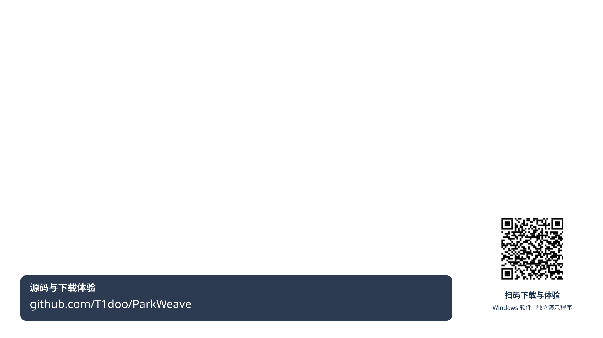

<!doctype html><html lang="zh-CN"><meta charset="utf-8"><title>园合 审阅修订预演</title><style>*{box-sizing:border-box}body{margin:0;background:#111c30;color:#edf3ff;font:16px "Microsoft YaHei",sans-serif}main{max-width:1280px;margin:20px auto;padding:0 16px}h1{font-size:24px}.stage{position:relative;aspect-ratio:16/9;background:#edf3ff;overflow:hidden;border-radius:12px}#frame{width:100%;height:100%;object-fit:contain}#empty{position:absolute;inset:0;display:grid;place-content:center;color:#314b70;font-size:30px;text-align:center}#caption{position:absolute;bottom:3%;left:10%;right:10%;text-align:center;color:white;font-size:26px;line-height:1.5;background:#152239dc;border-radius:6px;padding:8px}#caption:empty{display:none}#brand{position:absolute;inset:12% 5% auto;text-align:center;background:#10213cce;padding:20px;color:white;font-size:26px}#brand strong{display:block;font-size:40px;margin-bottom:14px}.tools{display:flex;gap:16px;margin-top:16px}audio{width:100%}select{padding:8px;background:#20334e;color:white}#info{line-height:1.7;margin-top:12px;color:#bacee8}.hint{font-size:14px;color:#a8bddc}</style><main><h1>园合 · 审阅修订静态预演</h1><p class="hint">24镜头，180秒。临时配音用于检查时长。S02情境及实际H3动态片段待生成，精确转场按镜头表制作。</p><div class="stage"><div id="empty" hidden>跨入口协调情境<br><small>文生视频待生成</small></div><div id="brand" hidden><strong>园合 ParkWeave</strong>让园区的每一种能力，汇聚到企业的每一次成长。</div><div id="caption"></div></div><div class="tools"><audio id="audio" src="临时配音180秒.wav" controls preload="metadata"></audio><select id="pick" aria-label="跳转镜头"></select></div><div id="info"></div></main><script>
const data={"shots": [{"id": "S01", "start": 0, "end": 8, "frames": [{"at": 0, "path": "S01/01-A01-晨景-v1.png"}], "title": "低幅升高/横移，六楼与池塘稳定；最后2秒保持。", "transition": "入口矩形匹配切到经办桌面，不加额外转场时长"}, {"id": "S02", "start": 8, "end": 15, "frames": [], "title": "改三方协调的输入分散情境；没有新素材用图形编辑，不展示假聊天记录。", "transition": "硬切C01，声音不断"}, {"id": "S03", "start": 15, "end": 22, "frames": [{"at": 0, "path": "S03/01-C01-v2.png"}], "title": "全景3秒，选中事项2秒，再保持2秒；不全页扫视。", "transition": "局部位置匹配到C02目标区"}, {"id": "S04", "start": 22, "end": 30, "frames": [{"at": 0, "path": "S04/01-C02-v2.png"}], "title": "3秒触发依据、3秒待核条件、2秒下一步；仅使用定稿已显示字段。", "transition": "硬切具体活动输入"}, {"id": "S05", "start": 30, "end": 38, "frames": [{"at": 0, "path": "S05/01-01-目标表达.png"}], "title": "两组条件：人数时段、预算与必需项；最后3秒完整读。", "transition": "以条件条位置匹配到服务图"}, {"id": "S06", "start": 38, "end": 47, "frames": [{"at": 0, "path": "S06/01-C05-v2.png"}], "title": "以“候选—核验—授权—回执”收束一条技术逻辑；语义箭头用SVG。", "transition": "候选方案出口匹配C03"}, {"id": "S07", "start": 47, "end": 55, "frames": [{"at": 0, "path": "S07/01-C03-v3.png"}], "title": "先整体、再两项淘汰原因、最后3秒解释A小计与时段待核。", "transition": "硬切资源预检区"}, {"id": "S08", "start": 55, "end": 63, "frames": [{"at": 0, "path": "S08/01-05-资源组合.png"}, {"at": 5, "path": "S08/02-N01-主事项资源已确认.png"}], "title": "给预检/确认各自结果。冲突作为试选场景；不够时间就取消冲突分支，不能删确认结果。", "transition": "确认结果稳定后硬切派单"}, {"id": "S09", "start": 63, "end": 70, "frames": [{"at": 0, "path": "S09/01-06-专员派单.png"}, {"at": 4, "path": "S09/02-07-等待接单.png"}], "title": "保持专员分派→执行者待接单，角色清楚，下一镜才接单。", "transition": "等任务名/角色位置对齐切S10"}, {"id": "S10", "start": 70, "end": 76, "frames": [{"at": 0, "path": "S10/01-08-执行中.png"}, {"at": 2, "path": "S10/02-N05-活动保障准备回执待核对.png"}, {"at": 4, "path": "S10/03-N06-活动保障准备已归档.png"}], "title": "用三张状态局部各2秒完成“接单—准备回执—企业归档”；不是活动全程完成。", "transition": "归档静止后切独立事项标题"}, {"id": "S11", "start": 76, "end": 80, "frames": [{"at": 0, "path": "S11/01-N00-企业费用偏好待确认.png"}], "title": "2秒独立案例标识，2秒进入变化；编号保留但不旁白念全串。", "transition": "版式连续进入前后表"}, {"id": "S12", "start": 80, "end": 88, "frames": [{"at": 0, "path": "S12/01-N00-企业费用偏好待确认.png"}, {"at": 4, "path": "S12/02-N07-偏好与方案比较.png"}], "title": "三项变化一组高光，偏好独立作为新增选择依据，后段保持。", "transition": "三变化标签匹配影响图"}, {"id": "S13", "start": 88, "end": 96, "frames": [{"at": 0, "path": "S13/01-C04-v3.png"}], "title": "分清三分支：新时段复验、费用候选、分工保留/执行安排复核。", "transition": "选择框匹配版本比较"}, {"id": "S14", "start": 96, "end": 104, "frames": [{"at": 0, "path": "S14/01-C04b-候选比较.png"}], "title": "改为两列固定比较，明确原A仍满足容量，选择B理由及费用口径。", "transition": "采用动作接复验页"}, {"id": "S15", "start": 104, "end": 110, "frames": [{"at": 0, "path": "S15/01-N09-修订资源待确认.png"}, {"at": 3, "path": "S15/02-N02-修订资源已确认.png"}], "title": "2秒复验，1秒明确确认，3秒结果；缺结果帧时不得称已确认。", "transition": "确认结果硬切回执"}, {"id": "S16", "start": 110, "end": 117, "frames": [{"at": 0, "path": "S16/01-N10-回执退回与纠正.png"}, {"at": 3, "path": "S16/02-N11-修订回执v2待核对.png"}], "title": "前3秒看缺口，后4秒看修订；18与计划20不同。", "transition": "企业核对动作接S17首次归档"}, {"id": "S17", "start": 117, "end": 124, "frames": [{"at": 0, "path": "S17/01-N03-首次归档-v1-回执v2.png"}, {"at": 2, "path": "S17/02-N12-重开事项待补充.png"}, {"at": 5, "path": "S17/03-N04-回执v3待企业核对.png"}], "title": "先确认归档v1，再说明重开原因与补充提交；再次归档留S18。", "transition": "补充回执到企业核对"}, {"id": "S18", "start": 124, "end": 130, "frames": [{"at": 0, "path": "S18/01-N08-再次归档与历史.png"}, {"at": 3, "path": "S18/02-N13-原归档依据.png"}], "title": "3秒版本关系，3秒旧档案局部；主句“不覆盖历史”。", "transition": "软切企业成长范围说明"}, {"id": "S19", "start": 130, "end": 138, "frames": [{"at": 0, "path": "S19/01-C07-v2.png"}], "title": "章题“同一机制，更多成长需求”；阶段保持待核，只强调职责。", "transition": "以样件需求标签接研发"}, {"id": "S20", "start": 138, "end": 145, "frames": [{"at": 0, "path": "S20/01-C06-v2.png"}], "title": "选一个检测需求，2秒样件/设备环境，5秒资格与报告要求局部。", "transition": "资料依据位置接政策"}, {"id": "S21", "start": 145, "end": 152, "frames": [{"at": 0, "path": "S21/01-C02-v2.png"}], "title": "主讲政策/人才准备，产业协作放正文或一条范围标签，不强演完整流程。", "transition": "硬切部署架构"}, {"id": "S22", "start": 152, "end": 161, "frames": [{"at": 0, "path": "S22/01-T02-v2.png"}], "title": "三阶段：客户端→受控服务与模型→业务系统结果；最后3秒整体保持。", "transition": "服务配置标签接第二园区"}, {"id": "S23", "start": 161, "end": 170, "frames": [{"at": 0, "path": "S23/01-C08-v2.png"}], "title": "展示映射过程和待核项；最终只说需试运行/验收。复制部署与跨园区协作分开。", "transition": "0.4秒叠化占用本镜末/下镜初已有帧"}, {"id": "S24", "start": 170, "end": 180, "frames": [{"at": 0, "path": "S24/01-A01-夜景-v1.png"}], "title": "170–174微拉远，175起完整品牌保持5秒，声音176–177前收句。", "transition": "180秒结束，无额外尾黑增加时长"}], "cues": [{"start": 0.15, "end": 4.373, "text": "一家企业的成长，需要多少次协作？"}, {"start": 8.15, "end": 14.163, "text": "空间、设备和岗位分散，办理需要跨入口协调。"}, {"start": 15.15, "end": 21.657, "text": "园合，从企业目标出发，把分散能力组织成连续服务。"}, {"start": 22.15, "end": 29.667, "text": "以企业授权的需求和服务更新为依据，提出机会，明确待核条件。"}, {"start": 30.15, "end": 36.277, "text": "四十人的技术交流，先核对时段、预算和必需设备。"}, {"start": 38.15, "end": 45.867, "text": "模型组织候选，规则核对条件；岗位承接任务，回执确认结果。"}, {"start": 47.15, "end": 54.652, "text": "先排除容量不足和缺少设备的方案，再解释可行候选与费用构成。"}, {"start": 55.15, "end": 61.522, "text": "预检后，核对当前资源状态，由企业明确确认组合。"}, {"start": 63.15, "end": 69.397, "text": "专员派发任务，执行者本人接单，责任随事项传递。"}, {"start": 70.15, "end": 74.743, "text": "准备结果经回执核对，进入事项档案。"}, {"start": 76.15, "end": 79.323, "text": "再看一项独立的变更案例。"}, {"start": 80.15, "end": 86.947, "text": "人数减半、时段后移、预算收紧，新条件先进入复验。"}, {"start": 88.15, "end": 95.012, "text": "系统区分保留、复验和候选替换，让有效安排继续沿用。"}, {"start": 96.15, "end": 102.312, "text": "原场地容量仍满足，企业按费用偏好选择会议室B。"}, {"start": 104.15, "end": 109.168, "text": "设备保留，新时段和接待安排重新确认。"}, {"start": 110.15, "end": 114.573, "text": "签到遗漏，回执补充后交企业核对。"}, {"start": 117.15, "end": 122.898, "text": "资料交接要求增加，事项重开，原依据保留。"}, {"start": 124.15, "end": 129.053, "text": "新回执形成新归档，旧版本仍能回看。"}, {"start": 130.15, "end": 137.037, "text": "同一机制延伸到入驻：空间、资料、网络与物业各有责任。"}, {"start": 138.15, "end": 143.693, "text": "研发服务核对样件、能力、资质与报告要求。"}, {"start": 145.15, "end": 150.847, "text": "政策服务核对来源与缺证据，再交专业岗位复核。"}, {"start": 152.15, "end": 160.346, "text": "工作台连接园区服务端，模型给建议，业务系统和授权人员确认结果。"}, {"start": 161.15, "end": 166.817, "text": "服务方法按园区配置，源码与体验版本现已开放。"}, {"start": 170.15, "end": 176.587, "text": "园合，让园区的每一种能力，汇聚到企业的每一次成长。"}], "seconds": [{"镜头": "S01", "全片起秒": "0", "全片止秒": "1", "局部起秒": "0", "局部止秒": "1", "画面动作": "建立同一园区建筑关系，水面微动", "本秒目的": "建立或切换一个可见信息", "素材": "A01晨景", "运镜": "H3 I2VA：缓升约小幅视差，不旋转", "旁白建议": "一家企业的成长，需要多少次协作？", "字幕建议": "按正式配音对齐；此CSV不是最终字幕时间戳", "声音": "旁白与主音乐跨镜连续；仅真实操作或关键强调可加一次轻音；非每镜提示音", "衔接": "延续本镜头", "版本": "本轮建议稿；未拍摄/未生成"}, {"镜头": "S01", "全片起秒": "1", "全片止秒": "2", "局部起秒": "1", "局部止秒": "2", "画面动作": "建立同一园区建筑关系，水面微动", "本秒目的": "阅读保持/连续动作，不增加信息", "素材": "A01晨景", "运镜": "H3 I2VA：缓升约小幅视差，不旋转", "旁白建议": "一家企业的成长，需要多少次协作？", "字幕建议": "按正式配音对齐；此CSV不是最终字幕时间戳", "声音": "旁白与主音乐跨镜连续；仅真实操作或关键强调可加一次轻音；非每镜提示音", "衔接": "延续本镜头", "版本": "本轮建议稿；未拍摄/未生成"}, {"镜头": "S01", "全片起秒": "2", "全片止秒": "3", "局部起秒": "2", "局部止秒": "3", "画面动作": "低幅升高并略横移，保持六栋楼不变", "本秒目的": "阅读保持/连续动作，不增加信息", "素材": "A01晨景", "运镜": "H3 I2VA：缓升约小幅视差，不旋转", "旁白建议": "一家企业的成长，需要多少次协作？", "字幕建议": "按正式配音对齐；此CSV不是最终字幕时间戳", "声音": "旁白与主音乐跨镜连续；仅真实操作或关键强调可加一次轻音；非每镜提示音", "衔接": "延续本镜头", "版本": "本轮建议稿；未拍摄/未生成"}, {"镜头": "S01", "全片起秒": "3", "全片止秒": "4", "局部起秒": "3", "局部止秒": "4", "画面动作": "低幅升高并略横移，保持六栋楼不变", "本秒目的": "阅读保持/连续动作，不增加信息", "素材": "A01晨景", "运镜": "H3 I2VA：缓升约小幅视差，不旋转", "旁白建议": "一家企业的成长，需要多少次协作？", "字幕建议": "按正式配音对齐；此CSV不是最终字幕时间戳", "声音": "旁白与主音乐跨镜连续；仅真实操作或关键强调可加一次轻音；非每镜提示音", "衔接": "延续本镜头", "版本": "本轮建议稿；未拍摄/未生成"}, {"镜头": "S01", "全片起秒": "4", "全片止秒": "5", "局部起秒": "4", "局部止秒": "5", "画面动作": "低幅升高并略横移，保持六栋楼不变", "本秒目的": "阅读保持/连续动作，不增加信息", "素材": "A01晨景", "运镜": "H3 I2VA：缓升约小幅视差，不旋转", "旁白建议": "一家企业的成长，需要多少次协作？", "字幕建议": "按正式配音对齐；此CSV不是最终字幕时间戳", "声音": "旁白与主音乐跨镜连续；仅真实操作或关键强调可加一次轻音；非每镜提示音", "衔接": "延续本镜头", "版本": "本轮建议稿；未拍摄/未生成"}, {"镜头": "S01", "全片起秒": "5", "全片止秒": "6", "局部起秒": "5", "局部止秒": "6", "画面动作": "相机减速，不新加雾/楼/人群", "本秒目的": "建立或切换一个可见信息", "素材": "A01晨景", "运镜": "H3 I2VA：缓升约小幅视差，不旋转", "旁白建议": "一家企业的成长，需要多少次协作？", "字幕建议": "按正式配音对齐；此CSV不是最终字幕时间戳", "声音": "旁白与主音乐跨镜连续；仅真实操作或关键强调可加一次轻音；非每镜提示音", "衔接": "延续本镜头", "版本": "本轮建议稿；未拍摄/未生成"}, {"镜头": "S01", "全片起秒": "6", "全片止秒": "7", "局部起秒": "6", "局部止秒": "7", "画面动作": "阅读保持：园区全景与问句；准备矩形匹配切", "本秒目的": "阅读保持/连续动作，不增加信息", "素材": "A01晨景", "运镜": "H3 I2VA：缓升约小幅视差，不旋转", "旁白建议": "一家企业的成长，需要多少次协作？", "字幕建议": "按正式配音对齐；此CSV不是最终字幕时间戳", "声音": "旁白与主音乐跨镜连续；仅真实操作或关键强调可加一次轻音；非每镜提示音", "衔接": "延续本镜头", "版本": "本轮建议稿；未拍摄/未生成"}, {"镜头": "S01", "全片起秒": "7", "全片止秒": "8", "局部起秒": "7", "局部止秒": "8", "画面动作": "阅读保持：园区全景与问句；准备矩形匹配切", "本秒目的": "阅读保持/连续动作，不增加信息", "素材": "A01晨景", "运镜": "H3 I2VA：缓升约小幅视差，不旋转", "旁白建议": "一家企业的成长，需要多少次协作？", "字幕建议": "按正式配音对齐；此CSV不是最终字幕时间戳", "声音": "旁白与主音乐跨镜连续；仅真实操作或关键强调可加一次轻音；非每镜提示音", "衔接": "入口矩形匹配切到经办桌面，不加额外转场时长", "版本": "本轮建议稿；未拍摄/未生成"}, {"镜头": "S02", "全片起秒": "8", "全片止秒": "9", "局部起秒": "0", "局部止秒": "1", "画面动作": "企业经办面对资料，画面无可识别客户/私人文字", "本秒目的": "建立或切换一个可见信息", "素材": "新增A02协调场景或精确后期需求分散图", "运镜": "横向跟移或平面分屏，不缩放产品UI", "旁白建议": "空间、设备和岗位分散，办理需要跨入口协调。", "字幕建议": "按正式配音对齐；此CSV不是最终字幕时间戳", "声音": "旁白与主音乐跨镜连续；仅真实操作或关键强调可加一次轻音；非每镜提示音", "衔接": "延续本镜头", "版本": "本轮建议稿；未拍摄/未生成"}, {"镜头": "S02", "全片起秒": "9", "全片止秒": "10", "局部起秒": "1", "局部止秒": "2", "画面动作": "企业经办面对资料，画面无可识别客户/私人文字", "本秒目的": "阅读保持/连续动作，不增加信息", "素材": "新增A02协调场景或精确后期需求分散图", "运镜": "横向跟移或平面分屏，不缩放产品UI", "旁白建议": "空间、设备和岗位分散，办理需要跨入口协调。", "字幕建议": "按正式配音对齐；此CSV不是最终字幕时间戳", "声音": "旁白与主音乐跨镜连续；仅真实操作或关键强调可加一次轻音；非每镜提示音", "衔接": "延续本镜头", "版本": "本轮建议稿；未拍摄/未生成"}, {"镜头": "S02", "全片起秒": "10", "全片止秒": "11", "局部起秒": "2", "局部止秒": "3", "画面动作": "横移揭示专员与资源协调端；后期最多三个短标签", "本秒目的": "建立或切换一个可见信息", "素材": "新增A02协调场景或精确后期需求分散图", "运镜": "横向跟移或平面分屏，不缩放产品UI", "旁白建议": "空间、设备和岗位分散，办理需要跨入口协调。", "字幕建议": "按正式配音对齐；此CSV不是最终字幕时间戳", "声音": "旁白与主音乐跨镜连续；仅真实操作或关键强调可加一次轻音；非每镜提示音", "衔接": "延续本镜头", "版本": "本轮建议稿；未拍摄/未生成"}, {"镜头": "S02", "全片起秒": "11", "全片止秒": "12", "局部起秒": "3", "局部止秒": "4", "画面动作": "横移揭示专员与资源协调端；后期最多三个短标签", "本秒目的": "阅读保持/连续动作，不增加信息", "素材": "新增A02协调场景或精确后期需求分散图", "运镜": "横向跟移或平面分屏，不缩放产品UI", "旁白建议": "空间、设备和岗位分散，办理需要跨入口协调。", "字幕建议": "按正式配音对齐；此CSV不是最终字幕时间戳", "声音": "旁白与主音乐跨镜连续；仅真实操作或关键强调可加一次轻音；非每镜提示音", "衔接": "延续本镜头", "版本": "本轮建议稿；未拍摄/未生成"}, {"镜头": "S02", "全片起秒": "12", "全片止秒": "13", "局部起秒": "4", "局部止秒": "5", "画面动作": "阅读保持：同一目标、多个入口；不继续新增面板", "本秒目的": "阅读保持/连续动作，不增加信息", "素材": "新增A02协调场景或精确后期需求分散图", "运镜": "横向跟移或平面分屏，不缩放产品UI", "旁白建议": "空间、设备和岗位分散，办理需要跨入口协调。", "字幕建议": "按正式配音对齐；此CSV不是最终字幕时间戳", "声音": "旁白与主音乐跨镜连续；仅真实操作或关键强调可加一次轻音；非每镜提示音", "衔接": "延续本镜头", "版本": "本轮建议稿；未拍摄/未生成"}, {"镜头": "S02", "全片起秒": "13", "全片止秒": "14", "局部起秒": "5", "局部止秒": "6", "画面动作": "阅读保持：同一目标、多个入口；不继续新增面板", "本秒目的": "阅读保持/连续动作，不增加信息", "素材": "新增A02协调场景或精确后期需求分散图", "运镜": "横向跟移或平面分屏，不缩放产品UI", "旁白建议": "空间、设备和岗位分散，办理需要跨入口协调。", "字幕建议": "按正式配音对齐；此CSV不是最终字幕时间戳", "声音": "旁白与主音乐跨镜连续；仅真实操作或关键强调可加一次轻音；非每镜提示音", "衔接": "延续本镜头", "版本": "本轮建议稿；未拍摄/未生成"}, {"镜头": "S02", "全片起秒": "14", "全片止秒": "15", "局部起秒": "6", "局部止秒": "7", "画面动作": "阅读保持：同一目标、多个入口；不继续新增面板", "本秒目的": "阅读保持/连续动作，不增加信息", "素材": "新增A02协调场景或精确后期需求分散图", "运镜": "横向跟移或平面分屏，不缩放产品UI", "旁白建议": "空间、设备和岗位分散，办理需要跨入口协调。", "字幕建议": "按正式配音对齐；此CSV不是最终字幕时间戳", "声音": "旁白与主音乐跨镜连续；仅真实操作或关键强调可加一次轻音；非每镜提示音", "衔接": "硬切C01，声音不断", "版本": "本轮建议稿；未拍摄/未生成"}, {"镜头": "S03", "全片起秒": "15", "全片止秒": "16", "局部起秒": "0", "局部止秒": "1", "画面动作": "完整C01与品牌稳定显示，读产品定位", "本秒目的": "建立或切换一个可见信息", "素材": "C01修订版", "运镜": "定稿图剪辑：全景→右侧选中事项局部", "旁白建议": "园合，从企业目标出发，把分散能力组织成连续服务。", "字幕建议": "按正式配音对齐；此CSV不是最终字幕时间戳", "声音": "旁白与主音乐跨镜连续；仅真实操作或关键强调可加一次轻音；非每镜提示音", "衔接": "延续本镜头", "版本": "本轮建议稿；未拍摄/未生成"}, {"镜头": "S03", "全片起秒": "16", "全片止秒": "17", "局部起秒": "1", "局部止秒": "2", "画面动作": "完整C01与品牌稳定显示，读产品定位", "本秒目的": "阅读保持/连续动作，不增加信息", "素材": "C01修订版", "运镜": "定稿图剪辑：全景→右侧选中事项局部", "旁白建议": "园合，从企业目标出发，把分散能力组织成连续服务。", "字幕建议": "按正式配音对齐；此CSV不是最终字幕时间戳", "声音": "旁白与主音乐跨镜连续；仅真实操作或关键强调可加一次轻音；非每镜提示音", "衔接": "延续本镜头", "版本": "本轮建议稿；未拍摄/未生成"}, {"镜头": "S03", "全片起秒": "17", "全片止秒": "18", "局部起秒": "2", "局部止秒": "3", "画面动作": "完整C01与品牌稳定显示，读产品定位", "本秒目的": "阅读保持/连续动作，不增加信息", "素材": "C01修订版", "运镜": "定稿图剪辑：全景→右侧选中事项局部", "旁白建议": "园合，从企业目标出发，把分散能力组织成连续服务。", "字幕建议": "按正式配音对齐；此CSV不是最终字幕时间戳", "声音": "旁白与主音乐跨镜连续；仅真实操作或关键强调可加一次轻音；非每镜提示音", "衔接": "延续本镜头", "版本": "本轮建议稿；未拍摄/未生成"}, {"镜头": "S03", "全片起秒": "18", "全片止秒": "19", "局部起秒": "3", "局部止秒": "4", "画面动作": "仅强调一个已选事项及关联路径，不动其业务状态", "本秒目的": "建立或切换一个可见信息", "素材": "C01修订版", "运镜": "定稿图剪辑：全景→右侧选中事项局部", "旁白建议": "园合，从企业目标出发，把分散能力组织成连续服务。", "字幕建议": "按正式配音对齐；此CSV不是最终字幕时间戳", "声音": "旁白与主音乐跨镜连续；仅真实操作或关键强调可加一次轻音；非每镜提示音", "衔接": "延续本镜头", "版本": "本轮建议稿；未拍摄/未生成"}, {"镜头": "S03", "全片起秒": "19", "全片止秒": "20", "局部起秒": "4", "局部止秒": "5", "画面动作": "仅强调一个已选事项及关联路径，不动其业务状态", "本秒目的": "阅读保持/连续动作，不增加信息", "素材": "C01修订版", "运镜": "定稿图剪辑：全景→右侧选中事项局部", "旁白建议": "园合，从企业目标出发，把分散能力组织成连续服务。", "字幕建议": "按正式配音对齐；此CSV不是最终字幕时间戳", "声音": "旁白与主音乐跨镜连续；仅真实操作或关键强调可加一次轻音；非每镜提示音", "衔接": "延续本镜头", "版本": "本轮建议稿；未拍摄/未生成"}, {"镜头": "S03", "全片起秒": "20", "全片止秒": "21", "局部起秒": "5", "局部止秒": "6", "画面动作": "阅读保持：当前事项与下一入口", "本秒目的": "阅读保持/连续动作，不增加信息", "素材": "C01修订版", "运镜": "定稿图剪辑：全景→右侧选中事项局部", "旁白建议": "园合，从企业目标出发，把分散能力组织成连续服务。", "字幕建议": "按正式配音对齐；此CSV不是最终字幕时间戳", "声音": "旁白与主音乐跨镜连续；仅真实操作或关键强调可加一次轻音；非每镜提示音", "衔接": "延续本镜头", "版本": "本轮建议稿；未拍摄/未生成"}, {"镜头": "S03", "全片起秒": "21", "全片止秒": "22", "局部起秒": "6", "局部止秒": "7", "画面动作": "阅读保持：当前事项与下一入口", "本秒目的": "阅读保持/连续动作，不增加信息", "素材": "C01修订版", "运镜": "定稿图剪辑：全景→右侧选中事项局部", "旁白建议": "园合，从企业目标出发，把分散能力组织成连续服务。", "字幕建议": "按正式配音对齐；此CSV不是最终字幕时间戳", "声音": "旁白与主音乐跨镜连续；仅真实操作或关键强调可加一次轻音；非每镜提示音", "衔接": "局部位置匹配到C02目标区", "版本": "本轮建议稿；未拍摄/未生成"}, {"镜头": "S04", "全片起秒": "22", "全片止秒": "23", "局部起秒": "0", "局部止秒": "1", "画面动作": "企业需求触发与选中服务同屏；阶段一致或有解释", "本秒目的": "建立或切换一个可见信息", "素材": "C02修订版/右栏特写", "运镜": "定稿图2.5D裁切轻横移；主体不透视变形", "旁白建议": "以企业授权的需求和服务更新为依据，提出机会，明确待核条件。", "字幕建议": "按正式配音对齐；此CSV不是最终字幕时间戳", "声音": "旁白与主音乐跨镜连续；仅真实操作或关键强调可加一次轻音；非每镜提示音", "衔接": "延续本镜头", "版本": "本轮建议稿；未拍摄/未生成"}, {"镜头": "S04", "全片起秒": "23", "全片止秒": "24", "局部起秒": "1", "局部止秒": "2", "画面动作": "企业需求触发与选中服务同屏；阶段一致或有解释", "本秒目的": "阅读保持/连续动作，不增加信息", "素材": "C02修订版/右栏特写", "运镜": "定稿图2.5D裁切轻横移；主体不透视变形", "旁白建议": "以企业授权的需求和服务更新为依据，提出机会，明确待核条件。", "字幕建议": "按正式配音对齐；此CSV不是最终字幕时间戳", "声音": "旁白与主音乐跨镜连续；仅真实操作或关键强调可加一次轻音；非每镜提示音", "衔接": "延续本镜头", "版本": "本轮建议稿；未拍摄/未生成"}, {"镜头": "S04", "全片起秒": "24", "全片止秒": "25", "局部起秒": "2", "局部止秒": "3", "画面动作": "企业需求触发与选中服务同屏；阶段一致或有解释", "本秒目的": "阅读保持/连续动作，不增加信息", "素材": "C02修订版/右栏特写", "运镜": "定稿图2.5D裁切轻横移；主体不透视变形", "旁白建议": "以企业授权的需求和服务更新为依据，提出机会，明确待核条件。", "字幕建议": "按正式配音对齐；此CSV不是最终字幕时间戳", "声音": "旁白与主音乐跨镜连续；仅真实操作或关键强调可加一次轻音；非每镜提示音", "衔接": "延续本镜头", "版本": "本轮建议稿；未拍摄/未生成"}, {"镜头": "S04", "全片起秒": "25", "全片止秒": "26", "局部起秒": "3", "局部止秒": "4", "画面动作": "显示来源/待核字段；保持而非生成不存在的展开", "本秒目的": "阅读保持/连续动作，不增加信息", "素材": "C02修订版/右栏特写", "运镜": "定稿图2.5D裁切轻横移；主体不透视变形", "旁白建议": "以企业授权的需求和服务更新为依据，提出机会，明确待核条件。", "字幕建议": "按正式配音对齐；此CSV不是最终字幕时间戳", "声音": "旁白与主音乐跨镜连续；仅真实操作或关键强调可加一次轻音；非每镜提示音", "衔接": "延续本镜头", "版本": "本轮建议稿；未拍摄/未生成"}, {"镜头": "S04", "全片起秒": "26", "全片止秒": "27", "局部起秒": "4", "局部止秒": "5", "画面动作": "显示来源/待核字段；保持而非生成不存在的展开", "本秒目的": "阅读保持/连续动作，不增加信息", "素材": "C02修订版/右栏特写", "运镜": "定稿图2.5D裁切轻横移；主体不透视变形", "旁白建议": "以企业授权的需求和服务更新为依据，提出机会，明确待核条件。", "字幕建议": "按正式配音对齐；此CSV不是最终字幕时间戳", "声音": "旁白与主音乐跨镜连续；仅真实操作或关键强调可加一次轻音；非每镜提示音", "衔接": "延续本镜头", "版本": "本轮建议稿；未拍摄/未生成"}, {"镜头": "S04", "全片起秒": "27", "全片止秒": "28", "局部起秒": "5", "局部止秒": "6", "画面动作": "显示来源/待核字段；保持而非生成不存在的展开", "本秒目的": "阅读保持/连续动作，不增加信息", "素材": "C02修订版/右栏特写", "运镜": "定稿图2.5D裁切轻横移；主体不透视变形", "旁白建议": "以企业授权的需求和服务更新为依据，提出机会，明确待核条件。", "字幕建议": "按正式配音对齐；此CSV不是最终字幕时间戳", "声音": "旁白与主音乐跨镜连续；仅真实操作或关键强调可加一次轻音；非每镜提示音", "衔接": "延续本镜头", "版本": "本轮建议稿；未拍摄/未生成"}, {"镜头": "S04", "全片起秒": "28", "全片止秒": "29", "局部起秒": "6", "局部止秒": "7", "画面动作": "阅读保持：明确下一步，推荐未获批", "本秒目的": "阅读保持/连续动作，不增加信息", "素材": "C02修订版/右栏特写", "运镜": "定稿图2.5D裁切轻横移；主体不透视变形", "旁白建议": "以企业授权的需求和服务更新为依据，提出机会，明确待核条件。", "字幕建议": "按正式配音对齐；此CSV不是最终字幕时间戳", "声音": "旁白与主音乐跨镜连续；仅真实操作或关键强调可加一次轻音；非每镜提示音", "衔接": "延续本镜头", "版本": "本轮建议稿；未拍摄/未生成"}, {"镜头": "S04", "全片起秒": "29", "全片止秒": "30", "局部起秒": "7", "局部止秒": "8", "画面动作": "阅读保持：明确下一步，推荐未获批", "本秒目的": "阅读保持/连续动作，不增加信息", "素材": "C02修订版/右栏特写", "运镜": "定稿图2.5D裁切轻横移；主体不透视变形", "旁白建议": "以企业授权的需求和服务更新为依据，提出机会，明确待核条件。", "字幕建议": "按正式配音对齐；此CSV不是最终字幕时间戳", "声音": "旁白与主音乐跨镜连续；仅真实操作或关键强调可加一次轻音；非每镜提示音", "衔接": "硬切具体活动输入", "版本": "本轮建议稿；未拍摄/未生成"}, {"镜头": "S05", "全片起秒": "30", "全片止秒": "31", "局部起秒": "0", "局部止秒": "1", "画面动作": "目标正文与条件表完整可见", "本秒目的": "建立或切换一个可见信息", "素材": "主流程01", "运镜": "真实录屏或原图高光，无AI改字", "旁白建议": "四十人的技术交流，先核对时段、预算和必需设备。", "字幕建议": "按正式配音对齐；此CSV不是最终字幕时间戳", "声音": "旁白与主音乐跨镜连续；仅真实操作或关键强调可加一次轻音；非每镜提示音", "衔接": "延续本镜头", "版本": "本轮建议稿；未拍摄/未生成"}, {"镜头": "S05", "全片起秒": "31", "全片止秒": "32", "局部起秒": "1", "局部止秒": "2", "画面动作": "目标正文与条件表完整可见", "本秒目的": "阅读保持/连续动作，不增加信息", "素材": "主流程01", "运镜": "真实录屏或原图高光，无AI改字", "旁白建议": "四十人的技术交流，先核对时段、预算和必需设备。", "字幕建议": "按正式配音对齐；此CSV不是最终字幕时间戳", "声音": "旁白与主音乐跨镜连续；仅真实操作或关键强调可加一次轻音；非每镜提示音", "衔接": "延续本镜头", "版本": "本轮建议稿；未拍摄/未生成"}, {"镜头": "S05", "全片起秒": "32", "全片止秒": "33", "局部起秒": "2", "局部止秒": "3", "画面动作": "强调40人、14:00–16:00与Asia/Shanghai", "本秒目的": "建立或切换一个可见信息", "素材": "主流程01", "运镜": "真实录屏或原图高光，无AI改字", "旁白建议": "四十人的技术交流，先核对时段、预算和必需设备。", "字幕建议": "按正式配音对齐；此CSV不是最终字幕时间戳", "声音": "旁白与主音乐跨镜连续；仅真实操作或关键强调可加一次轻音；非每镜提示音", "衔接": "延续本镜头", "版本": "本轮建议稿；未拍摄/未生成"}, {"镜头": "S05", "全片起秒": "33", "全片止秒": "34", "局部起秒": "3", "局部止秒": "4", "画面动作": "强调40人、14:00–16:00与Asia/Shanghai", "本秒目的": "阅读保持/连续动作，不增加信息", "素材": "主流程01", "运镜": "真实录屏或原图高光，无AI改字", "旁白建议": "四十人的技术交流，先核对时段、预算和必需设备。", "字幕建议": "按正式配音对齐；此CSV不是最终字幕时间戳", "声音": "旁白与主音乐跨镜连续；仅真实操作或关键强调可加一次轻音；非每镜提示音", "衔接": "延续本镜头", "版本": "本轮建议稿；未拍摄/未生成"}, {"镜头": "S05", "全片起秒": "34", "全片止秒": "35", "局部起秒": "4", "局部止秒": "5", "画面动作": "强调3000元上限及场地/投影音响要求", "本秒目的": "建立或切换一个可见信息", "素材": "主流程01", "运镜": "真实录屏或原图高光，无AI改字", "旁白建议": "四十人的技术交流，先核对时段、预算和必需设备。", "字幕建议": "按正式配音对齐；此CSV不是最终字幕时间戳", "声音": "旁白与主音乐跨镜连续；仅真实操作或关键强调可加一次轻音；非每镜提示音", "衔接": "延续本镜头", "版本": "本轮建议稿；未拍摄/未生成"}, {"镜头": "S05", "全片起秒": "35", "全片止秒": "36", "局部起秒": "5", "局部止秒": "6", "画面动作": "阅读保持：完整条件与来源，不伪造解析动画", "本秒目的": "阅读保持/连续动作，不增加信息", "素材": "主流程01", "运镜": "真实录屏或原图高光，无AI改字", "旁白建议": "四十人的技术交流，先核对时段、预算和必需设备。", "字幕建议": "按正式配音对齐；此CSV不是最终字幕时间戳", "声音": "旁白与主音乐跨镜连续；仅真实操作或关键强调可加一次轻音；非每镜提示音", "衔接": "延续本镜头", "版本": "本轮建议稿；未拍摄/未生成"}, {"镜头": "S05", "全片起秒": "36", "全片止秒": "37", "局部起秒": "6", "局部止秒": "7", "画面动作": "阅读保持：完整条件与来源，不伪造解析动画", "本秒目的": "阅读保持/连续动作，不增加信息", "素材": "主流程01", "运镜": "真实录屏或原图高光，无AI改字", "旁白建议": "四十人的技术交流，先核对时段、预算和必需设备。", "字幕建议": "按正式配音对齐；此CSV不是最终字幕时间戳", "声音": "旁白与主音乐跨镜连续；仅真实操作或关键强调可加一次轻音；非每镜提示音", "衔接": "延续本镜头", "版本": "本轮建议稿；未拍摄/未生成"}, {"镜头": "S05", "全片起秒": "37", "全片止秒": "38", "局部起秒": "7", "局部止秒": "8", "画面动作": "阅读保持：完整条件与来源，不伪造解析动画", "本秒目的": "阅读保持/连续动作，不增加信息", "素材": "主流程01", "运镜": "真实录屏或原图高光，无AI改字", "旁白建议": "四十人的技术交流，先核对时段、预算和必需设备。", "字幕建议": "按正式配音对齐；此CSV不是最终字幕时间戳", "声音": "旁白与主音乐跨镜连续；仅真实操作或关键强调可加一次轻音；非每镜提示音", "衔接": "以条件条位置匹配到服务图", "版本": "本轮建议稿；未拍摄/未生成"}, {"镜头": "S06", "全片起秒": "38", "全片止秒": "39", "局部起秒": "0", "局部止秒": "1", "画面动作": "目标与服务版本/来源字段建立", "本秒目的": "建立或切换一个可见信息", "素材": "C05＋T01重绘；可选无文字H3底板", "运镜": "静态相机；矢量路径按组出现，非镜头不断推近", "旁白建议": "模型组织候选，规则核对条件；岗位承接任务，回执确认结果。", "字幕建议": "按正式配音对齐；此CSV不是最终字幕时间戳", "声音": "旁白与主音乐跨镜连续；仅真实操作或关键强调可加一次轻音；非每镜提示音", "衔接": "延续本镜头", "版本": "本轮建议稿；未拍摄/未生成"}, {"镜头": "S06", "全片起秒": "39", "全片止秒": "40", "局部起秒": "1", "局部止秒": "2", "画面动作": "目标与服务版本/来源字段建立", "本秒目的": "阅读保持/连续动作，不增加信息", "素材": "C05＋T01重绘；可选无文字H3底板", "运镜": "静态相机；矢量路径按组出现，非镜头不断推近", "旁白建议": "模型组织候选，规则核对条件；岗位承接任务，回执确认结果。", "字幕建议": "按正式配音对齐；此CSV不是最终字幕时间戳", "声音": "旁白与主音乐跨镜连续；仅真实操作或关键强调可加一次轻音；非每镜提示音", "衔接": "延续本镜头", "版本": "本轮建议稿；未拍摄/未生成"}, {"镜头": "S06", "全片起秒": "40", "全片止秒": "41", "局部起秒": "2", "局部止秒": "3", "画面动作": "模型提出候选关系；材料/资源/责任不同边型", "本秒目的": "建立或切换一个可见信息", "素材": "C05＋T01重绘；可选无文字H3底板", "运镜": "静态相机；矢量路径按组出现，非镜头不断推近", "旁白建议": "模型组织候选，规则核对条件；岗位承接任务，回执确认结果。", "字幕建议": "按正式配音对齐；此CSV不是最终字幕时间戳", "声音": "旁白与主音乐跨镜连续；仅真实操作或关键强调可加一次轻音；非每镜提示音", "衔接": "延续本镜头", "版本": "本轮建议稿；未拍摄/未生成"}, {"镜头": "S06", "全片起秒": "41", "全片止秒": "42", "局部起秒": "3", "局部止秒": "4", "画面动作": "模型提出候选关系；材料/资源/责任不同边型", "本秒目的": "阅读保持/连续动作，不增加信息", "素材": "C05＋T01重绘；可选无文字H3底板", "运镜": "静态相机；矢量路径按组出现，非镜头不断推近", "旁白建议": "模型组织候选，规则核对条件；岗位承接任务，回执确认结果。", "字幕建议": "按正式配音对齐；此CSV不是最终字幕时间戳", "声音": "旁白与主音乐跨镜连续；仅真实操作或关键强调可加一次轻音；非每镜提示音", "衔接": "延续本镜头", "版本": "本轮建议稿；未拍摄/未生成"}, {"镜头": "S06", "全片起秒": "42", "全片止秒": "43", "局部起秒": "4", "局部止秒": "5", "画面动作": "确定性核验与待核分支出现，不变全绿", "本秒目的": "建立或切换一个可见信息", "素材": "C05＋T01重绘；可选无文字H3底板", "运镜": "静态相机；矢量路径按组出现，非镜头不断推近", "旁白建议": "模型组织候选，规则核对条件；岗位承接任务，回执确认结果。", "字幕建议": "按正式配音对齐；此CSV不是最终字幕时间戳", "声音": "旁白与主音乐跨镜连续；仅真实操作或关键强调可加一次轻音；非每镜提示音", "衔接": "延续本镜头", "版本": "本轮建议稿；未拍摄/未生成"}, {"镜头": "S06", "全片起秒": "43", "全片止秒": "44", "局部起秒": "5", "局部止秒": "6", "画面动作": "确定性核验与待核分支出现，不变全绿", "本秒目的": "阅读保持/连续动作，不增加信息", "素材": "C05＋T01重绘；可选无文字H3底板", "运镜": "静态相机；矢量路径按组出现，非镜头不断推近", "旁白建议": "模型组织候选，规则核对条件；岗位承接任务，回执确认结果。", "字幕建议": "按正式配音对齐；此CSV不是最终字幕时间戳", "声音": "旁白与主音乐跨镜连续；仅真实操作或关键强调可加一次轻音；非每镜提示音", "衔接": "延续本镜头", "版本": "本轮建议稿；未拍摄/未生成"}, {"镜头": "S06", "全片起秒": "44", "全片止秒": "45", "局部起秒": "6", "局部止秒": "7", "画面动作": "确认入口与交付检查连接，不显示执行已完成", "本秒目的": "建立或切换一个可见信息", "素材": "C05＋T01重绘；可选无文字H3底板", "运镜": "静态相机；矢量路径按组出现，非镜头不断推近", "旁白建议": "模型组织候选，规则核对条件；岗位承接任务，回执确认结果。", "字幕建议": "按正式配音对齐；此CSV不是最终字幕时间戳", "声音": "旁白与主音乐跨镜连续；仅真实操作或关键强调可加一次轻音；非每镜提示音", "衔接": "延续本镜头", "版本": "本轮建议稿；未拍摄/未生成"}, {"镜头": "S06", "全片起秒": "45", "全片止秒": "46", "局部起秒": "7", "局部止秒": "8", "画面动作": "阅读保持：完整主链与图例", "本秒目的": "阅读保持/连续动作，不增加信息", "素材": "C05＋T01重绘；可选无文字H3底板", "运镜": "静态相机；矢量路径按组出现，非镜头不断推近", "旁白建议": "模型组织候选，规则核对条件；岗位承接任务，回执确认结果。", "字幕建议": "按正式配音对齐；此CSV不是最终字幕时间戳", "声音": "旁白与主音乐跨镜连续；仅真实操作或关键强调可加一次轻音；非每镜提示音", "衔接": "延续本镜头", "版本": "本轮建议稿；未拍摄/未生成"}, {"镜头": "S06", "全片起秒": "46", "全片止秒": "47", "局部起秒": "8", "局部止秒": "9", "画面动作": "阅读保持：完整主链与图例", "本秒目的": "阅读保持/连续动作，不增加信息", "素材": "C05＋T01重绘；可选无文字H3底板", "运镜": "静态相机；矢量路径按组出现，非镜头不断推近", "旁白建议": "模型组织候选，规则核对条件；岗位承接任务，回执确认结果。", "字幕建议": "按正式配音对齐；此CSV不是最终字幕时间戳", "声音": "旁白与主音乐跨镜连续；仅真实操作或关键强调可加一次轻音；非每镜提示音", "衔接": "候选方案出口匹配C03", "版本": "本轮建议稿；未拍摄/未生成"}, {"镜头": "S07", "全片起秒": "47", "全片止秒": "48", "局部起秒": "0", "局部止秒": "1", "画面动作": "三候选与40人硬条件同时可见", "本秒目的": "建立或切换一个可见信息", "素材": "C03-v2修订版", "运镜": "定稿图并列对照；固定画框逐列强调", "旁白建议": "先排除容量不足和缺少设备的方案，再解释可行候选与费用构成。", "字幕建议": "按正式配音对齐；此CSV不是最终字幕时间戳", "声音": "旁白与主音乐跨镜连续；仅真实操作或关键强调可加一次轻音；非每镜提示音", "衔接": "延续本镜头", "版本": "本轮建议稿；未拍摄/未生成"}, {"镜头": "S07", "全片起秒": "48", "全片止秒": "49", "局部起秒": "1", "局部止秒": "2", "画面动作": "三候选与40人硬条件同时可见", "本秒目的": "阅读保持/连续动作，不增加信息", "素材": "C03-v2修订版", "运镜": "定稿图并列对照；固定画框逐列强调", "旁白建议": "先排除容量不足和缺少设备的方案，再解释可行候选与费用构成。", "字幕建议": "按正式配音对齐；此CSV不是最终字幕时间戳", "声音": "旁白与主音乐跨镜连续；仅真实操作或关键强调可加一次轻音；非每镜提示音", "衔接": "延续本镜头", "版本": "本轮建议稿；未拍摄/未生成"}, {"镜头": "S07", "全片起秒": "49", "全片止秒": "50", "局部起秒": "2", "局部止秒": "3", "画面动作": "B24人容量不足、C缺设备并列突出", "本秒目的": "建立或切换一个可见信息", "素材": "C03-v2修订版", "运镜": "定稿图并列对照；固定画框逐列强调", "旁白建议": "先排除容量不足和缺少设备的方案，再解释可行候选与费用构成。", "字幕建议": "按正式配音对齐；此CSV不是最终字幕时间戳", "声音": "旁白与主音乐跨镜连续；仅真实操作或关键强调可加一次轻音；非每镜提示音", "衔接": "延续本镜头", "版本": "本轮建议稿；未拍摄/未生成"}, {"镜头": "S07", "全片起秒": "50", "全片止秒": "51", "局部起秒": "3", "局部止秒": "4", "画面动作": "B24人容量不足、C缺设备并列突出", "本秒目的": "阅读保持/连续动作，不增加信息", "素材": "C03-v2修订版", "运镜": "定稿图并列对照；固定画框逐列强调", "旁白建议": "先排除容量不足和缺少设备的方案，再解释可行候选与费用构成。", "字幕建议": "按正式配音对齐；此CSV不是最终字幕时间戳", "声音": "旁白与主音乐跨镜连续；仅真实操作或关键强调可加一次轻音；非每镜提示音", "衔接": "延续本镜头", "版本": "本轮建议稿；未拍摄/未生成"}, {"镜头": "S07", "全片起秒": "51", "全片止秒": "52", "局部起秒": "4", "局部止秒": "5", "画面动作": "A48人含设备，资源小计1500元；不含全部费用", "本秒目的": "建立或切换一个可见信息", "素材": "C03-v2修订版", "运镜": "定稿图并列对照；固定画框逐列强调", "旁白建议": "先排除容量不足和缺少设备的方案，再解释可行候选与费用构成。", "字幕建议": "按正式配音对齐；此CSV不是最终字幕时间戳", "声音": "旁白与主音乐跨镜连续；仅真实操作或关键强调可加一次轻音；非每镜提示音", "衔接": "延续本镜头", "版本": "本轮建议稿；未拍摄/未生成"}, {"镜头": "S07", "全片起秒": "52", "全片止秒": "53", "局部起秒": "5", "局部止秒": "6", "画面动作": "阅读保持：条件匹配不等于时段可用/预约", "本秒目的": "阅读保持/连续动作，不增加信息", "素材": "C03-v2修订版", "运镜": "定稿图并列对照；固定画框逐列强调", "旁白建议": "先排除容量不足和缺少设备的方案，再解释可行候选与费用构成。", "字幕建议": "按正式配音对齐；此CSV不是最终字幕时间戳", "声音": "旁白与主音乐跨镜连续；仅真实操作或关键强调可加一次轻音；非每镜提示音", "衔接": "延续本镜头", "版本": "本轮建议稿；未拍摄/未生成"}, {"镜头": "S07", "全片起秒": "53", "全片止秒": "54", "局部起秒": "6", "局部止秒": "7", "画面动作": "阅读保持：条件匹配不等于时段可用/预约", "本秒目的": "阅读保持/连续动作，不增加信息", "素材": "C03-v2修订版", "运镜": "定稿图并列对照；固定画框逐列强调", "旁白建议": "先排除容量不足和缺少设备的方案，再解释可行候选与费用构成。", "字幕建议": "按正式配音对齐；此CSV不是最终字幕时间戳", "声音": "旁白与主音乐跨镜连续；仅真实操作或关键强调可加一次轻音；非每镜提示音", "衔接": "延续本镜头", "版本": "本轮建议稿；未拍摄/未生成"}, {"镜头": "S07", "全片起秒": "54", "全片止秒": "55", "局部起秒": "7", "局部止秒": "8", "画面动作": "阅读保持：条件匹配不等于时段可用/预约", "本秒目的": "阅读保持/连续动作，不增加信息", "素材": "C03-v2修订版", "运镜": "定稿图并列对照；固定画框逐列强调", "旁白建议": "先排除容量不足和缺少设备的方案，再解释可行候选与费用构成。", "字幕建议": "按正式配音对齐；此CSV不是最终字幕时间戳", "声音": "旁白与主音乐跨镜连续；仅真实操作或关键强调可加一次轻音；非每镜提示音", "衔接": "硬切资源预检区", "版本": "本轮建议稿；未拍摄/未生成"}, {"镜头": "S08", "全片起秒": "55", "全片止秒": "56", "局部起秒": "0", "局部止秒": "1", "画面动作": "可选试选13:00冲突，标题说明并非最终14:00条件", "本秒目的": "建立或切换一个可见信息", "素材": "主流程04/05＋N01确认后新截图", "运镜": "原录屏/精确剪辑；局部固定，不H3伪点击", "旁白建议": "预检后，核对当前资源状态，由企业明确确认组合。", "字幕建议": "按正式配音对齐；此CSV不是最终字幕时间戳", "声音": "旁白与主音乐跨镜连续；仅真实操作或关键强调可加一次轻音；非每镜提示音", "衔接": "延续本镜头", "版本": "本轮建议稿；未拍摄/未生成"}, {"镜头": "S08", "全片起秒": "56", "全片止秒": "57", "局部起秒": "1", "局部止秒": "2", "画面动作": "可选试选13:00冲突，标题说明并非最终14:00条件", "本秒目的": "阅读保持/连续动作，不增加信息", "素材": "主流程04/05＋N01确认后新截图", "运镜": "原录屏/精确剪辑；局部固定，不H3伪点击", "旁白建议": "预检后，核对当前资源状态，由企业明确确认组合。", "字幕建议": "按正式配音对齐；此CSV不是最终字幕时间戳", "声音": "旁白与主音乐跨镜连续；仅真实操作或关键强调可加一次轻音；非每镜提示音", "衔接": "延续本镜头", "版本": "本轮建议稿；未拍摄/未生成"}, {"镜头": "S08", "全片起秒": "57", "全片止秒": "58", "局部起秒": "2", "局部止秒": "3", "画面动作": "回到目标14:00–16:00，预检通过但尚未确认", "本秒目的": "建立或切换一个可见信息", "素材": "主流程04/05＋N01确认后新截图", "运镜": "原录屏/精确剪辑；局部固定，不H3伪点击", "旁白建议": "预检后，核对当前资源状态，由企业明确确认组合。", "字幕建议": "按正式配音对齐；此CSV不是最终字幕时间戳", "声音": "旁白与主音乐跨镜连续；仅真实操作或关键强调可加一次轻音；非每镜提示音", "衔接": "延续本镜头", "版本": "本轮建议稿；未拍摄/未生成"}, {"镜头": "S08", "全片起秒": "58", "全片止秒": "59", "局部起秒": "3", "局部止秒": "4", "画面动作": "回到目标14:00–16:00，预检通过但尚未确认", "本秒目的": "阅读保持/连续动作，不增加信息", "素材": "主流程04/05＋N01确认后新截图", "运镜": "原录屏/精确剪辑；局部固定，不H3伪点击", "旁白建议": "预检后，核对当前资源状态，由企业明确确认组合。", "字幕建议": "按正式配音对齐；此CSV不是最终字幕时间戳", "声音": "旁白与主音乐跨镜连续；仅真实操作或关键强调可加一次轻音；非每镜提示音", "衔接": "延续本镜头", "版本": "本轮建议稿；未拍摄/未生成"}, {"镜头": "S08", "全片起秒": "59", "全片止秒": "60", "局部起秒": "4", "局部止秒": "5", "画面动作": "原演示明确确认动作，不叠假请求成功", "本秒目的": "建立或切换一个可见信息", "素材": "主流程04/05＋N01确认后新截图", "运镜": "原录屏/精确剪辑；局部固定，不H3伪点击", "旁白建议": "预检后，核对当前资源状态，由企业明确确认组合。", "字幕建议": "按正式配音对齐；此CSV不是最终字幕时间戳", "声音": "旁白与主音乐跨镜连续；仅真实操作或关键强调可加一次轻音；非每镜提示音", "衔接": "延续本镜头", "版本": "本轮建议稿；未拍摄/未生成"}, {"镜头": "S08", "全片起秒": "60", "全片止秒": "61", "局部起秒": "5", "局部止秒": "6", "画面动作": "N01确认后结果保持，区分本地示例与真实预约", "本秒目的": "阅读保持/连续动作，不增加信息", "素材": "主流程04/05＋N01确认后新截图", "运镜": "原录屏/精确剪辑；局部固定，不H3伪点击", "旁白建议": "预检后，核对当前资源状态，由企业明确确认组合。", "字幕建议": "按正式配音对齐；此CSV不是最终字幕时间戳", "声音": "旁白与主音乐跨镜连续；仅真实操作或关键强调可加一次轻音；非每镜提示音", "衔接": "延续本镜头", "版本": "本轮建议稿；未拍摄/未生成"}, {"镜头": "S08", "全片起秒": "61", "全片止秒": "62", "局部起秒": "6", "局部止秒": "7", "画面动作": "N01确认后结果保持，区分本地示例与真实预约", "本秒目的": "阅读保持/连续动作，不增加信息", "素材": "主流程04/05＋N01确认后新截图", "运镜": "原录屏/精确剪辑；局部固定，不H3伪点击", "旁白建议": "预检后，核对当前资源状态，由企业明确确认组合。", "字幕建议": "按正式配音对齐；此CSV不是最终字幕时间戳", "声音": "旁白与主音乐跨镜连续；仅真实操作或关键强调可加一次轻音；非每镜提示音", "衔接": "延续本镜头", "版本": "本轮建议稿；未拍摄/未生成"}, {"镜头": "S08", "全片起秒": "62", "全片止秒": "63", "局部起秒": "7", "局部止秒": "8", "画面动作": "N01确认后结果保持，区分本地示例与真实预约", "本秒目的": "阅读保持/连续动作，不增加信息", "素材": "主流程04/05＋N01确认后新截图", "运镜": "原录屏/精确剪辑；局部固定，不H3伪点击", "旁白建议": "预检后，核对当前资源状态，由企业明确确认组合。", "字幕建议": "按正式配音对齐；此CSV不是最终字幕时间戳", "声音": "旁白与主音乐跨镜连续；仅真实操作或关键强调可加一次轻音；非每镜提示音", "衔接": "确认结果稳定后硬切派单", "版本": "本轮建议稿；未拍摄/未生成"}, {"镜头": "S09", "全片起秒": "63", "全片止秒": "64", "局部起秒": "0", "局部止秒": "1", "画面动作": "任务范围与专员角色可读", "本秒目的": "建立或切换一个可见信息", "素材": "主流程06/07", "运镜": "硬切角色视角，屏幕锚点相同", "旁白建议": "专员派发任务，执行者本人接单，责任随事项传递。", "字幕建议": "按正式配音对齐；此CSV不是最终字幕时间戳", "声音": "旁白与主音乐跨镜连续；仅真实操作或关键强调可加一次轻音；非每镜提示音", "衔接": "延续本镜头", "版本": "本轮建议稿；未拍摄/未生成"}, {"镜头": "S09", "全片起秒": "64", "全片止秒": "65", "局部起秒": "1", "局部止秒": "2", "画面动作": "任务范围与专员角色可读", "本秒目的": "阅读保持/连续动作，不增加信息", "素材": "主流程06/07", "运镜": "硬切角色视角，屏幕锚点相同", "旁白建议": "专员派发任务，执行者本人接单，责任随事项传递。", "字幕建议": "按正式配音对齐；此CSV不是最终字幕时间戳", "声音": "旁白与主音乐跨镜连续；仅真实操作或关键强调可加一次轻音；非每镜提示音", "衔接": "延续本镜头", "版本": "本轮建议稿；未拍摄/未生成"}, {"镜头": "S09", "全片起秒": "65", "全片止秒": "66", "局部起秒": "2", "局部止秒": "3", "画面动作": "真实演示分派动作并出现派出状态", "本秒目的": "建立或切换一个可见信息", "素材": "主流程06/07", "运镜": "硬切角色视角，屏幕锚点相同", "旁白建议": "专员派发任务，执行者本人接单，责任随事项传递。", "字幕建议": "按正式配音对齐；此CSV不是最终字幕时间戳", "声音": "旁白与主音乐跨镜连续；仅真实操作或关键强调可加一次轻音；非每镜提示音", "衔接": "延续本镜头", "版本": "本轮建议稿；未拍摄/未生成"}, {"镜头": "S09", "全片起秒": "66", "全片止秒": "67", "局部起秒": "3", "局部止秒": "4", "画面动作": "真实演示分派动作并出现派出状态", "本秒目的": "阅读保持/连续动作，不增加信息", "素材": "主流程06/07", "运镜": "硬切角色视角，屏幕锚点相同", "旁白建议": "专员派发任务，执行者本人接单，责任随事项传递。", "字幕建议": "按正式配音对齐；此CSV不是最终字幕时间戳", "声音": "旁白与主音乐跨镜连续；仅真实操作或关键强调可加一次轻音；非每镜提示音", "衔接": "延续本镜头", "版本": "本轮建议稿；未拍摄/未生成"}, {"镜头": "S09", "全片起秒": "67", "全片止秒": "68", "局部起秒": "4", "局部止秒": "5", "画面动作": "执行者待接单阅读保持，未显示已履约", "本秒目的": "阅读保持/连续动作，不增加信息", "素材": "主流程06/07", "运镜": "硬切角色视角，屏幕锚点相同", "旁白建议": "专员派发任务，执行者本人接单，责任随事项传递。", "字幕建议": "按正式配音对齐；此CSV不是最终字幕时间戳", "声音": "旁白与主音乐跨镜连续；仅真实操作或关键强调可加一次轻音；非每镜提示音", "衔接": "延续本镜头", "版本": "本轮建议稿；未拍摄/未生成"}, {"镜头": "S09", "全片起秒": "68", "全片止秒": "69", "局部起秒": "5", "局部止秒": "6", "画面动作": "执行者待接单阅读保持，未显示已履约", "本秒目的": "阅读保持/连续动作，不增加信息", "素材": "主流程06/07", "运镜": "硬切角色视角，屏幕锚点相同", "旁白建议": "专员派发任务，执行者本人接单，责任随事项传递。", "字幕建议": "按正式配音对齐；此CSV不是最终字幕时间戳", "声音": "旁白与主音乐跨镜连续；仅真实操作或关键强调可加一次轻音；非每镜提示音", "衔接": "延续本镜头", "版本": "本轮建议稿；未拍摄/未生成"}, {"镜头": "S09", "全片起秒": "69", "全片止秒": "70", "局部起秒": "6", "局部止秒": "7", "画面动作": "执行者待接单阅读保持，未显示已履约", "本秒目的": "阅读保持/连续动作，不增加信息", "素材": "主流程06/07", "运镜": "硬切角色视角，屏幕锚点相同", "旁白建议": "专员派发任务，执行者本人接单，责任随事项传递。", "字幕建议": "按正式配音对齐；此CSV不是最终字幕时间戳", "声音": "旁白与主音乐跨镜连续；仅真实操作或关键强调可加一次轻音；非每镜提示音", "衔接": "等任务名/角色位置对齐切S10", "版本": "本轮建议稿；未拍摄/未生成"}, {"镜头": "S10", "全片起秒": "70", "全片止秒": "71", "局部起秒": "0", "局部止秒": "1", "画面动作": "已接单/执行中局部，明确只是状态", "本秒目的": "建立或切换一个可见信息", "素材": "主流程08/09/10局部", "运镜": "同一局部硬切，最多2行关键字段", "旁白建议": "准备结果经回执核对，进入事项档案。", "字幕建议": "按正式配音对齐；此CSV不是最终字幕时间戳", "声音": "旁白与主音乐跨镜连续；仅真实操作或关键强调可加一次轻音；非每镜提示音", "衔接": "延续本镜头", "版本": "本轮建议稿；未拍摄/未生成"}, {"镜头": "S10", "全片起秒": "71", "全片止秒": "72", "局部起秒": "1", "局部止秒": "2", "画面动作": "已接单/执行中局部，明确只是状态", "本秒目的": "阅读保持/连续动作，不增加信息", "素材": "主流程08/09/10局部", "运镜": "同一局部硬切，最多2行关键字段", "旁白建议": "准备结果经回执核对，进入事项档案。", "字幕建议": "按正式配音对齐；此CSV不是最终字幕时间戳", "声音": "旁白与主音乐跨镜连续；仅真实操作或关键强调可加一次轻音；非每镜提示音", "衔接": "延续本镜头", "版本": "本轮建议稿；未拍摄/未生成"}, {"镜头": "S10", "全片起秒": "72", "全片止秒": "73", "局部起秒": "2", "局部止秒": "3", "画面动作": "准备回执：布置、联调、接待准备，经企业核对", "本秒目的": "建立或切换一个可见信息", "素材": "主流程08/09/10局部", "运镜": "同一局部硬切，最多2行关键字段", "旁白建议": "准备结果经回执核对，进入事项档案。", "字幕建议": "按正式配音对齐；此CSV不是最终字幕时间戳", "声音": "旁白与主音乐跨镜连续；仅真实操作或关键强调可加一次轻音；非每镜提示音", "衔接": "延续本镜头", "版本": "本轮建议稿；未拍摄/未生成"}, {"镜头": "S10", "全片起秒": "73", "全片止秒": "74", "局部起秒": "3", "局部止秒": "4", "画面动作": "准备回执：布置、联调、接待准备，经企业核对", "本秒目的": "阅读保持/连续动作，不增加信息", "素材": "主流程08/09/10局部", "运镜": "同一局部硬切，最多2行关键字段", "旁白建议": "准备结果经回执核对，进入事项档案。", "字幕建议": "按正式配音对齐；此CSV不是最终字幕时间戳", "声音": "旁白与主音乐跨镜连续；仅真实操作或关键强调可加一次轻音；非每镜提示音", "衔接": "延续本镜头", "版本": "本轮建议稿；未拍摄/未生成"}, {"镜头": "S10", "全片起秒": "74", "全片止秒": "75", "局部起秒": "4", "局部止秒": "5", "画面动作": "准备事项归档与成果入口保持；不显示真实活动完成", "本秒目的": "阅读保持/连续动作，不增加信息", "素材": "主流程08/09/10局部", "运镜": "同一局部硬切，最多2行关键字段", "旁白建议": "准备结果经回执核对，进入事项档案。", "字幕建议": "按正式配音对齐；此CSV不是最终字幕时间戳", "声音": "旁白与主音乐跨镜连续；仅真实操作或关键强调可加一次轻音；非每镜提示音", "衔接": "延续本镜头", "版本": "本轮建议稿；未拍摄/未生成"}, {"镜头": "S10", "全片起秒": "75", "全片止秒": "76", "局部起秒": "5", "局部止秒": "6", "画面动作": "准备事项归档与成果入口保持；不显示真实活动完成", "本秒目的": "阅读保持/连续动作，不增加信息", "素材": "主流程08/09/10局部", "运镜": "同一局部硬切，最多2行关键字段", "旁白建议": "准备结果经回执核对，进入事项档案。", "字幕建议": "按正式配音对齐；此CSV不是最终字幕时间戳", "声音": "旁白与主音乐跨镜连续；仅真实操作或关键强调可加一次轻音；非每镜提示音", "衔接": "归档静止后切独立事项标题", "版本": "本轮建议稿；未拍摄/未生成"}, {"镜头": "S11", "全片起秒": "76", "全片止秒": "77", "局部起秒": "0", "局部止秒": "1", "画面动作": "独立事项PW-20261108-003与标题可读", "本秒目的": "建立或切换一个可见信息", "素材": "变更01标题局部", "运镜": "平面章节切，不做花哨转场", "旁白建议": "再看一项独立的变更案例。", "字幕建议": "按正式配音对齐；此CSV不是最终字幕时间戳", "声音": "旁白与主音乐跨镜连续；仅真实操作或关键强调可加一次轻音；非每镜提示音", "衔接": "延续本镜头", "版本": "本轮建议稿；未拍摄/未生成"}, {"镜头": "S11", "全片起秒": "77", "全片止秒": "78", "局部起秒": "1", "局部止秒": "2", "画面动作": "独立事项PW-20261108-003与标题可读", "本秒目的": "阅读保持/连续动作，不增加信息", "素材": "变更01标题局部", "运镜": "平面章节切，不做花哨转场", "旁白建议": "再看一项独立的变更案例。", "字幕建议": "按正式配音对齐；此CSV不是最终字幕时间戳", "声音": "旁白与主音乐跨镜连续；仅真实操作或关键强调可加一次轻音；非每镜提示音", "衔接": "延续本镜头", "版本": "本轮建议稿；未拍摄/未生成"}, {"镜头": "S11", "全片起秒": "78", "全片止秒": "79", "局部起秒": "2", "局部止秒": "3", "画面动作": "新旧条件两列出现；不暗示001被改写", "本秒目的": "建立或切换一个可见信息", "素材": "变更01标题局部", "运镜": "平面章节切，不做花哨转场", "旁白建议": "再看一项独立的变更案例。", "字幕建议": "按正式配音对齐；此CSV不是最终字幕时间戳", "声音": "旁白与主音乐跨镜连续；仅真实操作或关键强调可加一次轻音；非每镜提示音", "衔接": "延续本镜头", "版本": "本轮建议稿；未拍摄/未生成"}, {"镜头": "S11", "全片起秒": "79", "全片止秒": "80", "局部起秒": "3", "局部止秒": "4", "画面动作": "新旧条件两列出现；不暗示001被改写", "本秒目的": "阅读保持/连续动作，不增加信息", "素材": "变更01标题局部", "运镜": "平面章节切，不做花哨转场", "旁白建议": "再看一项独立的变更案例。", "字幕建议": "按正式配音对齐；此CSV不是最终字幕时间戳", "声音": "旁白与主音乐跨镜连续；仅真实操作或关键强调可加一次轻音；非每镜提示音", "衔接": "版式连续进入前后表", "版本": "本轮建议稿；未拍摄/未生成"}, {"镜头": "S12", "全片起秒": "80", "全片止秒": "81", "局部起秒": "0", "局部止秒": "1", "画面动作": "v1/v2与事项003保持", "本秒目的": "阅读保持/连续动作，不增加信息", "素材": "变更01更新版", "运镜": "静态双列；数字原文不形变", "旁白建议": "人数减半、时段后移、预算收紧，新条件先进入复验。", "字幕建议": "按正式配音对齐；此CSV不是最终字幕时间戳", "声音": "旁白与主音乐跨镜连续；仅真实操作或关键强调可加一次轻音；非每镜提示音", "衔接": "延续本镜头", "版本": "本轮建议稿；未拍摄/未生成"}, {"镜头": "S12", "全片起秒": "81", "全片止秒": "82", "局部起秒": "1", "局部止秒": "2", "画面动作": "v1/v2与事项003保持", "本秒目的": "阅读保持/连续动作，不增加信息", "素材": "变更01更新版", "运镜": "静态双列；数字原文不形变", "旁白建议": "人数减半、时段后移、预算收紧，新条件先进入复验。", "字幕建议": "按正式配音对齐；此CSV不是最终字幕时间戳", "声音": "旁白与主音乐跨镜连续；仅真实操作或关键强调可加一次轻音；非每镜提示音", "衔接": "延续本镜头", "版本": "本轮建议稿；未拍摄/未生成"}, {"镜头": "S12", "全片起秒": "82", "全片止秒": "83", "局部起秒": "2", "局部止秒": "3", "画面动作": "40→20、14–16→15–17、3000→2000同时对照", "本秒目的": "建立或切换一个可见信息", "素材": "变更01更新版", "运镜": "静态双列；数字原文不形变", "旁白建议": "人数减半、时段后移、预算收紧，新条件先进入复验。", "字幕建议": "按正式配音对齐；此CSV不是最终字幕时间戳", "声音": "旁白与主音乐跨镜连续；仅真实操作或关键强调可加一次轻音；非每镜提示音", "衔接": "延续本镜头", "版本": "本轮建议稿；未拍摄/未生成"}, {"镜头": "S12", "全片起秒": "83", "全片止秒": "84", "局部起秒": "3", "局部止秒": "4", "画面动作": "40→20、14–16→15–17、3000→2000同时对照", "本秒目的": "阅读保持/连续动作，不增加信息", "素材": "变更01更新版", "运镜": "静态双列；数字原文不形变", "旁白建议": "人数减半、时段后移、预算收紧，新条件先进入复验。", "字幕建议": "按正式配音对齐；此CSV不是最终字幕时间戳", "声音": "旁白与主音乐跨镜连续；仅真实操作或关键强调可加一次轻音；非每镜提示音", "衔接": "延续本镜头", "版本": "本轮建议稿；未拍摄/未生成"}, {"镜头": "S12", "全片起秒": "84", "全片止秒": "85", "局部起秒": "4", "局部止秒": "5", "画面动作": "新增并明确费用偏好，标注用户选择而非系统猜测", "本秒目的": "建立或切换一个可见信息", "素材": "变更01更新版", "运镜": "静态双列；数字原文不形变", "旁白建议": "人数减半、时段后移、预算收紧，新条件先进入复验。", "字幕建议": "按正式配音对齐；此CSV不是最终字幕时间戳", "声音": "旁白与主音乐跨镜连续；仅真实操作或关键强调可加一次轻音；非每镜提示音", "衔接": "延续本镜头", "版本": "本轮建议稿；未拍摄/未生成"}, {"镜头": "S12", "全片起秒": "85", "全片止秒": "86", "局部起秒": "5", "局部止秒": "6", "画面动作": "阅读保持：变化全貌，不宣布原A已失效", "本秒目的": "阅读保持/连续动作，不增加信息", "素材": "变更01更新版", "运镜": "静态双列；数字原文不形变", "旁白建议": "人数减半、时段后移、预算收紧，新条件先进入复验。", "字幕建议": "按正式配音对齐；此CSV不是最终字幕时间戳", "声音": "旁白与主音乐跨镜连续；仅真实操作或关键强调可加一次轻音；非每镜提示音", "衔接": "延续本镜头", "版本": "本轮建议稿；未拍摄/未生成"}, {"镜头": "S12", "全片起秒": "86", "全片止秒": "87", "局部起秒": "6", "局部止秒": "7", "画面动作": "阅读保持：变化全貌，不宣布原A已失效", "本秒目的": "阅读保持/连续动作，不增加信息", "素材": "变更01更新版", "运镜": "静态双列；数字原文不形变", "旁白建议": "人数减半、时段后移、预算收紧，新条件先进入复验。", "字幕建议": "按正式配音对齐；此CSV不是最终字幕时间戳", "声音": "旁白与主音乐跨镜连续；仅真实操作或关键强调可加一次轻音；非每镜提示音", "衔接": "延续本镜头", "版本": "本轮建议稿；未拍摄/未生成"}, {"镜头": "S12", "全片起秒": "87", "全片止秒": "88", "局部起秒": "7", "局部止秒": "8", "画面动作": "阅读保持：变化全貌，不宣布原A已失效", "本秒目的": "阅读保持/连续动作，不增加信息", "素材": "变更01更新版", "运镜": "静态双列；数字原文不形变", "旁白建议": "人数减半、时段后移、预算收紧，新条件先进入复验。", "字幕建议": "按正式配音对齐；此CSV不是最终字幕时间戳", "声音": "旁白与主音乐跨镜连续；仅真实操作或关键强调可加一次轻音；非每镜提示音", "衔接": "三变化标签匹配影响图", "版本": "本轮建议稿；未拍摄/未生成"}, {"镜头": "S13", "全片起秒": "88", "全片止秒": "89", "局部起秒": "0", "局部止秒": "1", "画面动作": "变化与当前方案绑定", "本秒目的": "建立或切换一个可见信息", "素材": "C04修订影响图＋可选无字底板", "运镜": "相机固定，矢量连线分组强调", "旁白建议": "系统区分保留、复验和候选替换，让有效安排继续沿用。", "字幕建议": "按正式配音对齐；此CSV不是最终字幕时间戳", "声音": "旁白与主音乐跨镜连续；仅真实操作或关键强调可加一次轻音；非每镜提示音", "衔接": "延续本镜头", "版本": "本轮建议稿；未拍摄/未生成"}, {"镜头": "S13", "全片起秒": "89", "全片止秒": "90", "局部起秒": "1", "局部止秒": "2", "画面动作": "变化与当前方案绑定", "本秒目的": "阅读保持/连续动作，不增加信息", "素材": "C04修订影响图＋可选无字底板", "运镜": "相机固定，矢量连线分组强调", "旁白建议": "系统区分保留、复验和候选替换，让有效安排继续沿用。", "字幕建议": "按正式配音对齐；此CSV不是最终字幕时间戳", "声音": "旁白与主音乐跨镜连续；仅真实操作或关键强调可加一次轻音；非每镜提示音", "衔接": "延续本镜头", "版本": "本轮建议稿；未拍摄/未生成"}, {"镜头": "S13", "全片起秒": "90", "全片止秒": "91", "局部起秒": "2", "局部止秒": "3", "画面动作": "场地/设备新时段需要复验，容量本身仍满足", "本秒目的": "建立或切换一个可见信息", "素材": "C04修订影响图＋可选无字底板", "运镜": "相机固定，矢量连线分组强调", "旁白建议": "系统区分保留、复验和候选替换，让有效安排继续沿用。", "字幕建议": "按正式配音对齐；此CSV不是最终字幕时间戳", "声音": "旁白与主音乐跨镜连续；仅真实操作或关键强调可加一次轻音；非每镜提示音", "衔接": "延续本镜头", "版本": "本轮建议稿；未拍摄/未生成"}, {"镜头": "S13", "全片起秒": "91", "全片止秒": "92", "局部起秒": "3", "局部止秒": "4", "画面动作": "场地/设备新时段需要复验，容量本身仍满足", "本秒目的": "阅读保持/连续动作，不增加信息", "素材": "C04修订影响图＋可选无字底板", "运镜": "相机固定，矢量连线分组强调", "旁白建议": "系统区分保留、复验和候选替换，让有效安排继续沿用。", "字幕建议": "按正式配音对齐；此CSV不是最终字幕时间戳", "声音": "旁白与主音乐跨镜连续；仅真实操作或关键强调可加一次轻音；非每镜提示音", "衔接": "延续本镜头", "版本": "本轮建议稿；未拍摄/未生成"}, {"镜头": "S13", "全片起秒": "92", "全片止秒": "93", "局部起秒": "4", "局部止秒": "5", "画面动作": "费用偏好打开B候选，不画强制淘汰A", "本秒目的": "建立或切换一个可见信息", "素材": "C04修订影响图＋可选无字底板", "运镜": "相机固定，矢量连线分组强调", "旁白建议": "系统区分保留、复验和候选替换，让有效安排继续沿用。", "字幕建议": "按正式配音对齐；此CSV不是最终字幕时间戳", "声音": "旁白与主音乐跨镜连续；仅真实操作或关键强调可加一次轻音；非每镜提示音", "衔接": "延续本镜头", "版本": "本轮建议稿；未拍摄/未生成"}, {"镜头": "S13", "全片起秒": "93", "全片止秒": "94", "局部起秒": "5", "局部止秒": "6", "画面动作": "接待分工保留但安排待核；未知边保守处理", "本秒目的": "建立或切换一个可见信息", "素材": "C04修订影响图＋可选无字底板", "运镜": "相机固定，矢量连线分组强调", "旁白建议": "系统区分保留、复验和候选替换，让有效安排继续沿用。", "字幕建议": "按正式配音对齐；此CSV不是最终字幕时间戳", "声音": "旁白与主音乐跨镜连续；仅真实操作或关键强调可加一次轻音；非每镜提示音", "衔接": "延续本镜头", "版本": "本轮建议稿；未拍摄/未生成"}, {"镜头": "S13", "全片起秒": "94", "全片止秒": "95", "局部起秒": "6", "局部止秒": "7", "画面动作": "阅读保持：保留/复验/候选/未知四种含义", "本秒目的": "阅读保持/连续动作，不增加信息", "素材": "C04修订影响图＋可选无字底板", "运镜": "相机固定，矢量连线分组强调", "旁白建议": "系统区分保留、复验和候选替换，让有效安排继续沿用。", "字幕建议": "按正式配音对齐；此CSV不是最终字幕时间戳", "声音": "旁白与主音乐跨镜连续；仅真实操作或关键强调可加一次轻音；非每镜提示音", "衔接": "延续本镜头", "版本": "本轮建议稿；未拍摄/未生成"}, {"镜头": "S13", "全片起秒": "95", "全片止秒": "96", "局部起秒": "7", "局部止秒": "8", "画面动作": "阅读保持：保留/复验/候选/未知四种含义", "本秒目的": "阅读保持/连续动作，不增加信息", "素材": "C04修订影响图＋可选无字底板", "运镜": "相机固定，矢量连线分组强调", "旁白建议": "系统区分保留、复验和候选替换，让有效安排继续沿用。", "字幕建议": "按正式配音对齐；此CSV不是最终字幕时间戳", "声音": "旁白与主音乐跨镜连续；仅真实操作或关键强调可加一次轻音；非每镜提示音", "衔接": "选择框匹配版本比较", "版本": "本轮建议稿；未拍摄/未生成"}, {"镜头": "S14", "全片起秒": "96", "全片止秒": "97", "局部起秒": "0", "局部止秒": "1", "画面动作": "A48/1500与B24/900两候选同屏；新时段均需核", "本秒目的": "建立或切换一个可见信息", "素材": "新增C04b版本/候选比较", "运镜": "水平对照，不慢推整张同图", "旁白建议": "原场地容量仍满足，企业按费用偏好选择会议室B。", "字幕建议": "按正式配音对齐；此CSV不是最终字幕时间戳", "声音": "旁白与主音乐跨镜连续；仅真实操作或关键强调可加一次轻音；非每镜提示音", "衔接": "延续本镜头", "版本": "本轮建议稿；未拍摄/未生成"}, {"镜头": "S14", "全片起秒": "97", "全片止秒": "98", "局部起秒": "1", "局部止秒": "2", "画面动作": "A48/1500与B24/900两候选同屏；新时段均需核", "本秒目的": "阅读保持/连续动作，不增加信息", "素材": "新增C04b版本/候选比较", "运镜": "水平对照，不慢推整张同图", "旁白建议": "原场地容量仍满足，企业按费用偏好选择会议室B。", "字幕建议": "按正式配音对齐；此CSV不是最终字幕时间戳", "声音": "旁白与主音乐跨镜连续；仅真实操作或关键强调可加一次轻音；非每镜提示音", "衔接": "延续本镜头", "版本": "本轮建议稿；未拍摄/未生成"}, {"镜头": "S14", "全片起秒": "98", "全片止秒": "99", "局部起秒": "2", "局部止秒": "3", "画面动作": "强调20人需求与企业费用偏好", "本秒目的": "建立或切换一个可见信息", "素材": "新增C04b版本/候选比较", "运镜": "水平对照，不慢推整张同图", "旁白建议": "原场地容量仍满足，企业按费用偏好选择会议室B。", "字幕建议": "按正式配音对齐；此CSV不是最终字幕时间戳", "声音": "旁白与主音乐跨镜连续；仅真实操作或关键强调可加一次轻音；非每镜提示音", "衔接": "延续本镜头", "版本": "本轮建议稿；未拍摄/未生成"}, {"镜头": "S14", "全片起秒": "99", "全片止秒": "100", "局部起秒": "3", "局部止秒": "4", "画面动作": "强调20人需求与企业费用偏好", "本秒目的": "阅读保持/连续动作，不增加信息", "素材": "新增C04b版本/候选比较", "运镜": "水平对照，不慢推整张同图", "旁白建议": "原场地容量仍满足，企业按费用偏好选择会议室B。", "字幕建议": "按正式配音对齐；此CSV不是最终字幕时间戳", "声音": "旁白与主音乐跨镜连续；仅真实操作或关键强调可加一次轻音；非每镜提示音", "衔接": "延续本镜头", "版本": "本轮建议稿；未拍摄/未生成"}, {"镜头": "S14", "全片起秒": "100", "全片止秒": "101", "局部起秒": "4", "局部止秒": "5", "画面动作": "设备类型/分工保留，时段仍待确认", "本秒目的": "建立或切换一个可见信息", "素材": "新增C04b版本/候选比较", "运镜": "水平对照，不慢推整张同图", "旁白建议": "原场地容量仍满足，企业按费用偏好选择会议室B。", "字幕建议": "按正式配音对齐；此CSV不是最终字幕时间戳", "声音": "旁白与主音乐跨镜连续；仅真实操作或关键强调可加一次轻音；非每镜提示音", "衔接": "延续本镜头", "版本": "本轮建议稿；未拍摄/未生成"}, {"镜头": "S14", "全片起秒": "101", "全片止秒": "102", "局部起秒": "5", "局部止秒": "6", "画面动作": "阅读保持：600元为示例资源差额，不是实测节省", "本秒目的": "阅读保持/连续动作，不增加信息", "素材": "新增C04b版本/候选比较", "运镜": "水平对照，不慢推整张同图", "旁白建议": "原场地容量仍满足，企业按费用偏好选择会议室B。", "字幕建议": "按正式配音对齐；此CSV不是最终字幕时间戳", "声音": "旁白与主音乐跨镜连续；仅真实操作或关键强调可加一次轻音；非每镜提示音", "衔接": "延续本镜头", "版本": "本轮建议稿；未拍摄/未生成"}, {"镜头": "S14", "全片起秒": "102", "全片止秒": "103", "局部起秒": "6", "局部止秒": "7", "画面动作": "阅读保持：600元为示例资源差额，不是实测节省", "本秒目的": "阅读保持/连续动作，不增加信息", "素材": "新增C04b版本/候选比较", "运镜": "水平对照，不慢推整张同图", "旁白建议": "原场地容量仍满足，企业按费用偏好选择会议室B。", "字幕建议": "按正式配音对齐；此CSV不是最终字幕时间戳", "声音": "旁白与主音乐跨镜连续；仅真实操作或关键强调可加一次轻音；非每镜提示音", "衔接": "延续本镜头", "版本": "本轮建议稿；未拍摄/未生成"}, {"镜头": "S14", "全片起秒": "103", "全片止秒": "104", "局部起秒": "7", "局部止秒": "8", "画面动作": "阅读保持：600元为示例资源差额，不是实测节省", "本秒目的": "阅读保持/连续动作，不增加信息", "素材": "新增C04b版本/候选比较", "运镜": "水平对照，不慢推整张同图", "旁白建议": "原场地容量仍满足，企业按费用偏好选择会议室B。", "字幕建议": "按正式配音对齐；此CSV不是最终字幕时间戳", "声音": "旁白与主音乐跨镜连续；仅真实操作或关键强调可加一次轻音；非每镜提示音", "衔接": "采用动作接复验页", "版本": "本轮建议稿；未拍摄/未生成"}, {"镜头": "S15", "全片起秒": "104", "全片止秒": "105", "局部起秒": "0", "局部止秒": "1", "画面动作": "v2资源复验与待确认同时可读", "本秒目的": "建立或切换一个可见信息", "素材": "变更02＋N02确认后帧", "运镜": "原演示录屏；稳定局部", "旁白建议": "设备保留，新时段和接待安排重新确认。", "字幕建议": "按正式配音对齐；此CSV不是最终字幕时间戳", "声音": "旁白与主音乐跨镜连续；仅真实操作或关键强调可加一次轻音；非每镜提示音", "衔接": "延续本镜头", "版本": "本轮建议稿；未拍摄/未生成"}, {"镜头": "S15", "全片起秒": "105", "全片止秒": "106", "局部起秒": "1", "局部止秒": "2", "画面动作": "v2资源复验与待确认同时可读", "本秒目的": "阅读保持/连续动作，不增加信息", "素材": "变更02＋N02确认后帧", "运镜": "原演示录屏；稳定局部", "旁白建议": "设备保留，新时段和接待安排重新确认。", "字幕建议": "按正式配音对齐；此CSV不是最终字幕时间戳", "声音": "旁白与主音乐跨镜连续；仅真实操作或关键强调可加一次轻音；非每镜提示音", "衔接": "延续本镜头", "版本": "本轮建议稿；未拍摄/未生成"}, {"镜头": "S15", "全片起秒": "106", "全片止秒": "107", "局部起秒": "2", "局部止秒": "3", "画面动作": "原演示明确确认操作", "本秒目的": "建立或切换一个可见信息", "素材": "变更02＋N02确认后帧", "运镜": "原演示录屏；稳定局部", "旁白建议": "设备保留，新时段和接待安排重新确认。", "字幕建议": "按正式配音对齐；此CSV不是最终字幕时间戳", "声音": "旁白与主音乐跨镜连续；仅真实操作或关键强调可加一次轻音；非每镜提示音", "衔接": "延续本镜头", "版本": "本轮建议稿；未拍摄/未生成"}, {"镜头": "S15", "全片起秒": "107", "全片止秒": "108", "局部起秒": "3", "局部止秒": "4", "画面动作": "N02确认后稳定结果；不转成外部预约已获批准", "本秒目的": "建立或切换一个可见信息", "素材": "变更02＋N02确认后帧", "运镜": "原演示录屏；稳定局部", "旁白建议": "设备保留，新时段和接待安排重新确认。", "字幕建议": "按正式配音对齐；此CSV不是最终字幕时间戳", "声音": "旁白与主音乐跨镜连续；仅真实操作或关键强调可加一次轻音；非每镜提示音", "衔接": "延续本镜头", "版本": "本轮建议稿；未拍摄/未生成"}, {"镜头": "S15", "全片起秒": "108", "全片止秒": "109", "局部起秒": "4", "局部止秒": "5", "画面动作": "N02确认后稳定结果；不转成外部预约已获批准", "本秒目的": "阅读保持/连续动作，不增加信息", "素材": "变更02＋N02确认后帧", "运镜": "原演示录屏；稳定局部", "旁白建议": "设备保留，新时段和接待安排重新确认。", "字幕建议": "按正式配音对齐；此CSV不是最终字幕时间戳", "声音": "旁白与主音乐跨镜连续；仅真实操作或关键强调可加一次轻音；非每镜提示音", "衔接": "延续本镜头", "版本": "本轮建议稿；未拍摄/未生成"}, {"镜头": "S15", "全片起秒": "109", "全片止秒": "110", "局部起秒": "5", "局部止秒": "6", "画面动作": "N02确认后稳定结果；不转成外部预约已获批准", "本秒目的": "阅读保持/连续动作，不增加信息", "素材": "变更02＋N02确认后帧", "运镜": "原演示录屏；稳定局部", "旁白建议": "设备保留，新时段和接待安排重新确认。", "字幕建议": "按正式配音对齐；此CSV不是最终字幕时间戳", "声音": "旁白与主音乐跨镜连续；仅真实操作或关键强调可加一次轻音；非每镜提示音", "衔接": "确认结果硬切回执", "版本": "本轮建议稿；未拍摄/未生成"}, {"镜头": "S16", "全片起秒": "110", "全片止秒": "111", "局部起秒": "0", "局部止秒": "1", "画面动作": "回执v1与纠正要求：实际签到人数及依据待补", "本秒目的": "建立或切换一个可见信息", "素材": "变更03/04", "运镜": "固定区域硬切，保留旧回执", "旁白建议": "签到遗漏，回执补充后交企业核对。", "字幕建议": "按正式配音对齐；此CSV不是最终字幕时间戳", "声音": "旁白与主音乐跨镜连续；仅真实操作或关键强调可加一次轻音；非每镜提示音", "衔接": "延续本镜头", "版本": "本轮建议稿；未拍摄/未生成"}, {"镜头": "S16", "全片起秒": "111", "全片止秒": "112", "局部起秒": "1", "局部止秒": "2", "画面动作": "回执v1与纠正要求：实际签到人数及依据待补", "本秒目的": "阅读保持/连续动作，不增加信息", "素材": "变更03/04", "运镜": "固定区域硬切，保留旧回执", "旁白建议": "签到遗漏，回执补充后交企业核对。", "字幕建议": "按正式配音对齐；此CSV不是最终字幕时间戳", "声音": "旁白与主音乐跨镜连续；仅真实操作或关键强调可加一次轻音；非每镜提示音", "衔接": "延续本镜头", "版本": "本轮建议稿；未拍摄/未生成"}, {"镜头": "S16", "全片起秒": "112", "全片止秒": "113", "局部起秒": "2", "局部止秒": "3", "画面动作": "回执v1与纠正要求：实际签到人数及依据待补", "本秒目的": "阅读保持/连续动作，不增加信息", "素材": "变更03/04", "运镜": "固定区域硬切，保留旧回执", "旁白建议": "签到遗漏，回执补充后交企业核对。", "字幕建议": "按正式配音对齐；此CSV不是最终字幕时间戳", "声音": "旁白与主音乐跨镜连续；仅真实操作或关键强调可加一次轻音；非每镜提示音", "衔接": "延续本镜头", "版本": "本轮建议稿；未拍摄/未生成"}, {"镜头": "S16", "全片起秒": "113", "全片止秒": "114", "局部起秒": "3", "局部止秒": "4", "画面动作": "回执v2填写示例签到18人及来源描述", "本秒目的": "建立或切换一个可见信息", "素材": "变更03/04", "运镜": "固定区域硬切，保留旧回执", "旁白建议": "签到遗漏，回执补充后交企业核对。", "字幕建议": "按正式配音对齐；此CSV不是最终字幕时间戳", "声音": "旁白与主音乐跨镜连续；仅真实操作或关键强调可加一次轻音；非每镜提示音", "衔接": "延续本镜头", "版本": "本轮建议稿；未拍摄/未生成"}, {"镜头": "S16", "全片起秒": "114", "全片止秒": "115", "局部起秒": "4", "局部止秒": "5", "画面动作": "回执v2填写示例签到18人及来源描述", "本秒目的": "阅读保持/连续动作，不增加信息", "素材": "变更03/04", "运镜": "固定区域硬切，保留旧回执", "旁白建议": "签到遗漏，回执补充后交企业核对。", "字幕建议": "按正式配音对齐；此CSV不是最终字幕时间戳", "声音": "旁白与主音乐跨镜连续；仅真实操作或关键强调可加一次轻音；非每镜提示音", "衔接": "延续本镜头", "版本": "本轮建议稿；未拍摄/未生成"}, {"镜头": "S16", "全片起秒": "115", "全片止秒": "116", "局部起秒": "5", "局部止秒": "6", "画面动作": "阅读保持：旧v1保留、当前v2待企业确认", "本秒目的": "阅读保持/连续动作，不增加信息", "素材": "变更03/04", "运镜": "固定区域硬切，保留旧回执", "旁白建议": "签到遗漏，回执补充后交企业核对。", "字幕建议": "按正式配音对齐；此CSV不是最终字幕时间戳", "声音": "旁白与主音乐跨镜连续；仅真实操作或关键强调可加一次轻音；非每镜提示音", "衔接": "延续本镜头", "版本": "本轮建议稿；未拍摄/未生成"}, {"镜头": "S16", "全片起秒": "116", "全片止秒": "117", "局部起秒": "6", "局部止秒": "7", "画面动作": "阅读保持：旧v1保留、当前v2待企业确认", "本秒目的": "阅读保持/连续动作，不增加信息", "素材": "变更03/04", "运镜": "固定区域硬切，保留旧回执", "旁白建议": "签到遗漏，回执补充后交企业核对。", "字幕建议": "按正式配音对齐；此CSV不是最终字幕时间戳", "声音": "旁白与主音乐跨镜连续；仅真实操作或关键强调可加一次轻音；非每镜提示音", "衔接": "企业核对动作接S17首次归档", "版本": "本轮建议稿；未拍摄/未生成"}, {"镜头": "S17", "全片起秒": "117", "全片止秒": "118", "局部起秒": "0", "局部止秒": "1", "画面动作": "N03首次归档v1绑定回执v2，状态保持", "本秒目的": "阅读保持/连续动作，不增加信息", "素材": "N03首次归档＋变更05＋N04", "运镜": "同锚点状态切，版本不做数字形变", "旁白建议": "资料交接要求增加，事项重开，原依据保留。", "字幕建议": "按正式配音对齐；此CSV不是最终字幕时间戳", "声音": "旁白与主音乐跨镜连续；仅真实操作或关键强调可加一次轻音；非每镜提示音", "衔接": "延续本镜头", "版本": "本轮建议稿；未拍摄/未生成"}, {"镜头": "S17", "全片起秒": "118", "全片止秒": "119", "局部起秒": "1", "局部止秒": "2", "画面动作": "N03首次归档v1绑定回执v2，状态保持", "本秒目的": "阅读保持/连续动作，不增加信息", "素材": "N03首次归档＋变更05＋N04", "运镜": "同锚点状态切，版本不做数字形变", "旁白建议": "资料交接要求增加，事项重开，原依据保留。", "字幕建议": "按正式配音对齐；此CSV不是最终字幕时间戳", "声音": "旁白与主音乐跨镜连续；仅真实操作或关键强调可加一次轻音；非每镜提示音", "衔接": "延续本镜头", "版本": "本轮建议稿；未拍摄/未生成"}, {"镜头": "S17", "全片起秒": "119", "全片止秒": "120", "局部起秒": "2", "局部止秒": "3", "画面动作": "重开原因：需补资料交接人与交接结果", "本秒目的": "建立或切换一个可见信息", "素材": "N03首次归档＋变更05＋N04", "运镜": "同锚点状态切，版本不做数字形变", "旁白建议": "资料交接要求增加，事项重开，原依据保留。", "字幕建议": "按正式配音对齐；此CSV不是最终字幕时间戳", "声音": "旁白与主音乐跨镜连续；仅真实操作或关键强调可加一次轻音；非每镜提示音", "衔接": "延续本镜头", "版本": "本轮建议稿；未拍摄/未生成"}, {"镜头": "S17", "全片起秒": "120", "全片止秒": "121", "局部起秒": "3", "局部止秒": "4", "画面动作": "重开原因：需补资料交接人与交接结果", "本秒目的": "阅读保持/连续动作，不增加信息", "素材": "N03首次归档＋变更05＋N04", "运镜": "同锚点状态切，版本不做数字形变", "旁白建议": "资料交接要求增加，事项重开，原依据保留。", "字幕建议": "按正式配音对齐；此CSV不是最终字幕时间戳", "声音": "旁白与主音乐跨镜连续；仅真实操作或关键强调可加一次轻音；非每镜提示音", "衔接": "延续本镜头", "版本": "本轮建议稿；未拍摄/未生成"}, {"镜头": "S17", "全片起秒": "121", "全片止秒": "122", "局部起秒": "4", "局部止秒": "5", "画面动作": "执行者补充资料交接，原归档继续保留", "本秒目的": "建立或切换一个可见信息", "素材": "N03首次归档＋变更05＋N04", "运镜": "同锚点状态切，版本不做数字形变", "旁白建议": "资料交接要求增加，事项重开，原依据保留。", "字幕建议": "按正式配音对齐；此CSV不是最终字幕时间戳", "声音": "旁白与主音乐跨镜连续；仅真实操作或关键强调可加一次轻音；非每镜提示音", "衔接": "延续本镜头", "版本": "本轮建议稿；未拍摄/未生成"}, {"镜头": "S17", "全片起秒": "122", "全片止秒": "123", "局部起秒": "5", "局部止秒": "6", "画面动作": "N04回执v3待企业核对；未提前画新归档成功", "本秒目的": "建立或切换一个可见信息", "素材": "N03首次归档＋变更05＋N04", "运镜": "同锚点状态切，版本不做数字形变", "旁白建议": "资料交接要求增加，事项重开，原依据保留。", "字幕建议": "按正式配音对齐；此CSV不是最终字幕时间戳", "声音": "旁白与主音乐跨镜连续；仅真实操作或关键强调可加一次轻音；非每镜提示音", "衔接": "延续本镜头", "版本": "本轮建议稿；未拍摄/未生成"}, {"镜头": "S17", "全片起秒": "123", "全片止秒": "124", "局部起秒": "6", "局部止秒": "7", "画面动作": "N04回执v3待企业核对；未提前画新归档成功", "本秒目的": "阅读保持/连续动作，不增加信息", "素材": "N03首次归档＋变更05＋N04", "运镜": "同锚点状态切，版本不做数字形变", "旁白建议": "资料交接要求增加，事项重开，原依据保留。", "字幕建议": "按正式配音对齐；此CSV不是最终字幕时间戳", "声音": "旁白与主音乐跨镜连续；仅真实操作或关键强调可加一次轻音；非每镜提示音", "衔接": "补充回执到企业核对", "版本": "本轮建议稿；未拍摄/未生成"}, {"镜头": "S18", "全片起秒": "124", "全片止秒": "125", "局部起秒": "0", "局部止秒": "1", "画面动作": "归档v1→回执v2，归档v2→回执v3并列", "本秒目的": "建立或切换一个可见信息", "素材": "变更06/07", "运镜": "原图/原录屏，模态框由实际操作打开", "旁白建议": "新回执形成新归档，旧版本仍能回看。", "字幕建议": "按正式配音对齐；此CSV不是最终字幕时间戳", "声音": "旁白与主音乐跨镜连续；仅真实操作或关键强调可加一次轻音；非每镜提示音", "衔接": "延续本镜头", "版本": "本轮建议稿；未拍摄/未生成"}, {"镜头": "S18", "全片起秒": "125", "全片止秒": "126", "局部起秒": "1", "局部止秒": "2", "画面动作": "归档v1→回执v2，归档v2→回执v3并列", "本秒目的": "阅读保持/连续动作，不增加信息", "素材": "变更06/07", "运镜": "原图/原录屏，模态框由实际操作打开", "旁白建议": "新回执形成新归档，旧版本仍能回看。", "字幕建议": "按正式配音对齐；此CSV不是最终字幕时间戳", "声音": "旁白与主音乐跨镜连续；仅真实操作或关键强调可加一次轻音；非每镜提示音", "衔接": "延续本镜头", "版本": "本轮建议稿；未拍摄/未生成"}, {"镜头": "S18", "全片起秒": "126", "全片止秒": "127", "局部起秒": "2", "局部止秒": "3", "画面动作": "归档v1→回执v2，归档v2→回执v3并列", "本秒目的": "阅读保持/连续动作，不增加信息", "素材": "变更06/07", "运镜": "原图/原录屏，模态框由实际操作打开", "旁白建议": "新回执形成新归档，旧版本仍能回看。", "字幕建议": "按正式配音对齐；此CSV不是最终字幕时间戳", "声音": "旁白与主音乐跨镜连续；仅真实操作或关键强调可加一次轻音；非每镜提示音", "衔接": "延续本镜头", "版本": "本轮建议稿；未拍摄/未生成"}, {"镜头": "S18", "全片起秒": "127", "全片止秒": "128", "局部起秒": "3", "局部止秒": "4", "画面动作": "原归档模态框保持：当时回执及纠正依据不改", "本秒目的": "阅读保持/连续动作，不增加信息", "素材": "变更06/07", "运镜": "原图/原录屏，模态框由实际操作打开", "旁白建议": "新回执形成新归档，旧版本仍能回看。", "字幕建议": "按正式配音对齐；此CSV不是最终字幕时间戳", "声音": "旁白与主音乐跨镜连续；仅真实操作或关键强调可加一次轻音；非每镜提示音", "衔接": "延续本镜头", "版本": "本轮建议稿；未拍摄/未生成"}, {"镜头": "S18", "全片起秒": "128", "全片止秒": "129", "局部起秒": "4", "局部止秒": "5", "画面动作": "原归档模态框保持：当时回执及纠正依据不改", "本秒目的": "阅读保持/连续动作，不增加信息", "素材": "变更06/07", "运镜": "原图/原录屏，模态框由实际操作打开", "旁白建议": "新回执形成新归档，旧版本仍能回看。", "字幕建议": "按正式配音对齐；此CSV不是最终字幕时间戳", "声音": "旁白与主音乐跨镜连续；仅真实操作或关键强调可加一次轻音；非每镜提示音", "衔接": "延续本镜头", "版本": "本轮建议稿；未拍摄/未生成"}, {"镜头": "S18", "全片起秒": "129", "全片止秒": "130", "局部起秒": "5", "局部止秒": "6", "画面动作": "原归档模态框保持：当时回执及纠正依据不改", "本秒目的": "阅读保持/连续动作，不增加信息", "素材": "变更06/07", "运镜": "原图/原录屏，模态框由实际操作打开", "旁白建议": "新回执形成新归档，旧版本仍能回看。", "字幕建议": "按正式配音对齐；此CSV不是最终字幕时间戳", "声音": "旁白与主音乐跨镜连续；仅真实操作或关键强调可加一次轻音；非每镜提示音", "衔接": "软切企业成长范围说明", "版本": "本轮建议稿；未拍摄/未生成"}, {"镜头": "S19", "全片起秒": "130", "全片止秒": "131", "局部起秒": "0", "局部止秒": "1", "画面动作": "入驻设计场景与企业需求", "本秒目的": "建立或切换一个可见信息", "素材": "C07修订版", "运镜": "水平巡览阶段后固定责任局部", "旁白建议": "同一机制延伸到入驻：空间、资料、网络与物业各有责任。", "字幕建议": "按正式配音对齐；此CSV不是最终字幕时间戳", "声音": "旁白与主音乐跨镜连续；仅真实操作或关键强调可加一次轻音；非每镜提示音", "衔接": "延续本镜头", "版本": "本轮建议稿；未拍摄/未生成"}, {"镜头": "S19", "全片起秒": "131", "全片止秒": "132", "局部起秒": "1", "局部止秒": "2", "画面动作": "入驻设计场景与企业需求", "本秒目的": "阅读保持/连续动作，不增加信息", "素材": "C07修订版", "运镜": "水平巡览阶段后固定责任局部", "旁白建议": "同一机制延伸到入驻：空间、资料、网络与物业各有责任。", "字幕建议": "按正式配音对齐；此CSV不是最终字幕时间戳", "声音": "旁白与主音乐跨镜连续；仅真实操作或关键强调可加一次轻音；非每镜提示音", "衔接": "延续本镜头", "版本": "本轮建议稿；未拍摄/未生成"}, {"镜头": "S19", "全片起秒": "132", "全片止秒": "133", "局部起秒": "2", "局部止秒": "3", "画面动作": "空间/资料/网络物业责任并列，选中非完成", "本秒目的": "建立或切换一个可见信息", "素材": "C07修订版", "运镜": "水平巡览阶段后固定责任局部", "旁白建议": "同一机制延伸到入驻：空间、资料、网络与物业各有责任。", "字幕建议": "按正式配音对齐；此CSV不是最终字幕时间戳", "声音": "旁白与主音乐跨镜连续；仅真实操作或关键强调可加一次轻音；非每镜提示音", "衔接": "延续本镜头", "版本": "本轮建议稿；未拍摄/未生成"}, {"镜头": "S19", "全片起秒": "133", "全片止秒": "134", "局部起秒": "3", "局部止秒": "4", "画面动作": "空间/资料/网络物业责任并列，选中非完成", "本秒目的": "阅读保持/连续动作，不增加信息", "素材": "C07修订版", "运镜": "水平巡览阶段后固定责任局部", "旁白建议": "同一机制延伸到入驻：空间、资料、网络与物业各有责任。", "字幕建议": "按正式配音对齐；此CSV不是最终字幕时间戳", "声音": "旁白与主音乐跨镜连续；仅真实操作或关键强调可加一次轻音；非每镜提示音", "衔接": "延续本镜头", "版本": "本轮建议稿；未拍摄/未生成"}, {"镜头": "S19", "全片起秒": "134", "全片止秒": "135", "局部起秒": "4", "局部止秒": "5", "画面动作": "空间/资料/网络物业责任并列，选中非完成", "本秒目的": "阅读保持/连续动作，不增加信息", "素材": "C07修订版", "运镜": "水平巡览阶段后固定责任局部", "旁白建议": "同一机制延伸到入驻：空间、资料、网络与物业各有责任。", "字幕建议": "按正式配音对齐；此CSV不是最终字幕时间戳", "声音": "旁白与主音乐跨镜连续；仅真实操作或关键强调可加一次轻音；非每镜提示音", "衔接": "延续本镜头", "版本": "本轮建议稿；未拍摄/未生成"}, {"镜头": "S19", "全片起秒": "135", "全片止秒": "136", "局部起秒": "5", "局部止秒": "6", "画面动作": "阅读保持：准备清单与待协调项，不声称已入驻", "本秒目的": "阅读保持/连续动作，不增加信息", "素材": "C07修订版", "运镜": "水平巡览阶段后固定责任局部", "旁白建议": "同一机制延伸到入驻：空间、资料、网络与物业各有责任。", "字幕建议": "按正式配音对齐；此CSV不是最终字幕时间戳", "声音": "旁白与主音乐跨镜连续；仅真实操作或关键强调可加一次轻音；非每镜提示音", "衔接": "延续本镜头", "版本": "本轮建议稿；未拍摄/未生成"}, {"镜头": "S19", "全片起秒": "136", "全片止秒": "137", "局部起秒": "6", "局部止秒": "7", "画面动作": "阅读保持：准备清单与待协调项，不声称已入驻", "本秒目的": "阅读保持/连续动作，不增加信息", "素材": "C07修订版", "运镜": "水平巡览阶段后固定责任局部", "旁白建议": "同一机制延伸到入驻：空间、资料、网络与物业各有责任。", "字幕建议": "按正式配音对齐；此CSV不是最终字幕时间戳", "声音": "旁白与主音乐跨镜连续；仅真实操作或关键强调可加一次轻音；非每镜提示音", "衔接": "延续本镜头", "版本": "本轮建议稿；未拍摄/未生成"}, {"镜头": "S19", "全片起秒": "137", "全片止秒": "138", "局部起秒": "7", "局部止秒": "8", "画面动作": "阅读保持：准备清单与待协调项，不声称已入驻", "本秒目的": "阅读保持/连续动作，不增加信息", "素材": "C07修订版", "运镜": "水平巡览阶段后固定责任局部", "旁白建议": "同一机制延伸到入驻：空间、资料、网络与物业各有责任。", "字幕建议": "按正式配音对齐；此CSV不是最终字幕时间戳", "声音": "旁白与主音乐跨镜连续；仅真实操作或关键强调可加一次轻音；非每镜提示音", "衔接": "以样件需求标签接研发", "版本": "本轮建议稿；未拍摄/未生成"}, {"镜头": "S20", "全片起秒": "138", "全片止秒": "139", "局部起秒": "0", "局部止秒": "1", "画面动作": "样件观察/检测目标与设备环境，不显示合格结果", "本秒目的": "建立或切换一个可见信息", "素材": "C06修订版；可选样件B-roll", "运镜": "可选低幅横移场景→固定UI特写", "旁白建议": "研发服务核对样件、能力、资质与报告要求。", "字幕建议": "按正式配音对齐；此CSV不是最终字幕时间戳", "声音": "旁白与主音乐跨镜连续；仅真实操作或关键强调可加一次轻音；非每镜提示音", "衔接": "延续本镜头", "版本": "本轮建议稿；未拍摄/未生成"}, {"镜头": "S20", "全片起秒": "139", "全片止秒": "140", "局部起秒": "1", "局部止秒": "2", "画面动作": "样件观察/检测目标与设备环境，不显示合格结果", "本秒目的": "阅读保持/连续动作，不增加信息", "素材": "C06修订版；可选样件B-roll", "运镜": "可选低幅横移场景→固定UI特写", "旁白建议": "研发服务核对样件、能力、资质与报告要求。", "字幕建议": "按正式配音对齐；此CSV不是最终字幕时间戳", "声音": "旁白与主音乐跨镜连续；仅真实操作或关键强调可加一次轻音；非每镜提示音", "衔接": "延续本镜头", "版本": "本轮建议稿；未拍摄/未生成"}, {"镜头": "S20", "全片起秒": "140", "全片止秒": "141", "局部起秒": "2", "局部止秒": "3", "画面动作": "能力适用性与资质待核，未知参数待补", "本秒目的": "建立或切换一个可见信息", "素材": "C06修订版；可选样件B-roll", "运镜": "可选低幅横移场景→固定UI特写", "旁白建议": "研发服务核对样件、能力、资质与报告要求。", "字幕建议": "按正式配音对齐；此CSV不是最终字幕时间戳", "声音": "旁白与主音乐跨镜连续；仅真实操作或关键强调可加一次轻音；非每镜提示音", "衔接": "延续本镜头", "版本": "本轮建议稿；未拍摄/未生成"}, {"镜头": "S20", "全片起秒": "141", "全片止秒": "142", "局部起秒": "3", "局部止秒": "4", "画面动作": "能力适用性与资质待核，未知参数待补", "本秒目的": "阅读保持/连续动作，不增加信息", "素材": "C06修订版；可选样件B-roll", "运镜": "可选低幅横移场景→固定UI特写", "旁白建议": "研发服务核对样件、能力、资质与报告要求。", "字幕建议": "按正式配音对齐；此CSV不是最终字幕时间戳", "声音": "旁白与主音乐跨镜连续；仅真实操作或关键强调可加一次轻音；非每镜提示音", "衔接": "延续本镜头", "版本": "本轮建议稿；未拍摄/未生成"}, {"镜头": "S20", "全片起秒": "142", "全片止秒": "143", "局部起秒": "4", "局部止秒": "5", "画面动作": "阅读保持：时段及报告交付要求，不把设备预约等同检测完成", "本秒目的": "阅读保持/连续动作，不增加信息", "素材": "C06修订版；可选样件B-roll", "运镜": "可选低幅横移场景→固定UI特写", "旁白建议": "研发服务核对样件、能力、资质与报告要求。", "字幕建议": "按正式配音对齐；此CSV不是最终字幕时间戳", "声音": "旁白与主音乐跨镜连续；仅真实操作或关键强调可加一次轻音；非每镜提示音", "衔接": "延续本镜头", "版本": "本轮建议稿；未拍摄/未生成"}, {"镜头": "S20", "全片起秒": "143", "全片止秒": "144", "局部起秒": "5", "局部止秒": "6", "画面动作": "阅读保持：时段及报告交付要求，不把设备预约等同检测完成", "本秒目的": "阅读保持/连续动作，不增加信息", "素材": "C06修订版；可选样件B-roll", "运镜": "可选低幅横移场景→固定UI特写", "旁白建议": "研发服务核对样件、能力、资质与报告要求。", "字幕建议": "按正式配音对齐；此CSV不是最终字幕时间戳", "声音": "旁白与主音乐跨镜连续；仅真实操作或关键强调可加一次轻音；非每镜提示音", "衔接": "延续本镜头", "版本": "本轮建议稿；未拍摄/未生成"}, {"镜头": "S20", "全片起秒": "144", "全片止秒": "145", "局部起秒": "6", "局部止秒": "7", "画面动作": "阅读保持：时段及报告交付要求，不把设备预约等同检测完成", "本秒目的": "阅读保持/连续动作，不增加信息", "素材": "C06修订版；可选样件B-roll", "运镜": "可选低幅横移场景→固定UI特写", "旁白建议": "研发服务核对样件、能力、资质与报告要求。", "字幕建议": "按正式配音对齐；此CSV不是最终字幕时间戳", "声音": "旁白与主音乐跨镜连续；仅真实操作或关键强调可加一次轻音；非每镜提示音", "衔接": "资料依据位置接政策", "版本": "本轮建议稿；未拍摄/未生成"}, {"镜头": "S21", "全片起秒": "145", "全片止秒": "146", "局部起秒": "0", "局部止秒": "1", "画面动作": "当前来源/适用范围，不生成假政策文号", "本秒目的": "建立或切换一个可见信息", "素材": "C02右栏补图", "运镜": "定稿局部，来源→缺证据，不推全景", "旁白建议": "政策服务核对来源与缺证据，再交专业岗位复核。", "字幕建议": "按正式配音对齐；此CSV不是最终字幕时间戳", "声音": "旁白与主音乐跨镜连续；仅真实操作或关键强调可加一次轻音；非每镜提示音", "衔接": "延续本镜头", "版本": "本轮建议稿；未拍摄/未生成"}, {"镜头": "S21", "全片起秒": "146", "全片止秒": "147", "局部起秒": "1", "局部止秒": "2", "画面动作": "当前来源/适用范围，不生成假政策文号", "本秒目的": "阅读保持/连续动作，不增加信息", "素材": "C02右栏补图", "运镜": "定稿局部，来源→缺证据，不推全景", "旁白建议": "政策服务核对来源与缺证据，再交专业岗位复核。", "字幕建议": "按正式配音对齐；此CSV不是最终字幕时间戳", "声音": "旁白与主音乐跨镜连续；仅真实操作或关键强调可加一次轻音；非每镜提示音", "衔接": "延续本镜头", "版本": "本轮建议稿；未拍摄/未生成"}, {"镜头": "S21", "全片起秒": "147", "全片止秒": "148", "局部起秒": "2", "局部止秒": "3", "画面动作": "缺证据与材料准备项", "本秒目的": "建立或切换一个可见信息", "素材": "C02右栏补图", "运镜": "定稿局部，来源→缺证据，不推全景", "旁白建议": "政策服务核对来源与缺证据，再交专业岗位复核。", "字幕建议": "按正式配音对齐；此CSV不是最终字幕时间戳", "声音": "旁白与主音乐跨镜连续；仅真实操作或关键强调可加一次轻音；非每镜提示音", "衔接": "延续本镜头", "版本": "本轮建议稿；未拍摄/未生成"}, {"镜头": "S21", "全片起秒": "148", "全片止秒": "149", "局部起秒": "3", "局部止秒": "4", "画面动作": "缺证据与材料准备项", "本秒目的": "阅读保持/连续动作，不增加信息", "素材": "C02右栏补图", "运镜": "定稿局部，来源→缺证据，不推全景", "旁白建议": "政策服务核对来源与缺证据，再交专业岗位复核。", "字幕建议": "按正式配音对齐；此CSV不是最终字幕时间戳", "声音": "旁白与主音乐跨镜连续；仅真实操作或关键强调可加一次轻音；非每镜提示音", "衔接": "延续本镜头", "版本": "本轮建议稿；未拍摄/未生成"}, {"镜头": "S21", "全片起秒": "149", "全片止秒": "150", "局部起秒": "4", "局部止秒": "5", "画面动作": "阅读保持：专员复核入口；产业伙伴仅范围提示，不暗示成交", "本秒目的": "阅读保持/连续动作，不增加信息", "素材": "C02右栏补图", "运镜": "定稿局部，来源→缺证据，不推全景", "旁白建议": "政策服务核对来源与缺证据，再交专业岗位复核。", "字幕建议": "按正式配音对齐；此CSV不是最终字幕时间戳", "声音": "旁白与主音乐跨镜连续；仅真实操作或关键强调可加一次轻音；非每镜提示音", "衔接": "延续本镜头", "版本": "本轮建议稿；未拍摄/未生成"}, {"镜头": "S21", "全片起秒": "150", "全片止秒": "151", "局部起秒": "5", "局部止秒": "6", "画面动作": "阅读保持：专员复核入口；产业伙伴仅范围提示，不暗示成交", "本秒目的": "阅读保持/连续动作，不增加信息", "素材": "C02右栏补图", "运镜": "定稿局部，来源→缺证据，不推全景", "旁白建议": "政策服务核对来源与缺证据，再交专业岗位复核。", "字幕建议": "按正式配音对齐；此CSV不是最终字幕时间戳", "声音": "旁白与主音乐跨镜连续；仅真实操作或关键强调可加一次轻音；非每镜提示音", "衔接": "延续本镜头", "版本": "本轮建议稿；未拍摄/未生成"}, {"镜头": "S21", "全片起秒": "151", "全片止秒": "152", "局部起秒": "6", "局部止秒": "7", "画面动作": "阅读保持：专员复核入口；产业伙伴仅范围提示，不暗示成交", "本秒目的": "阅读保持/连续动作，不增加信息", "素材": "C02右栏补图", "运镜": "定稿局部，来源→缺证据，不推全景", "旁白建议": "政策服务核对来源与缺证据，再交专业岗位复核。", "字幕建议": "按正式配音对齐；此CSV不是最终字幕时间戳", "声音": "旁白与主音乐跨镜连续；仅真实操作或关键强调可加一次轻音；非每镜提示音", "衔接": "硬切部署架构", "版本": "本轮建议稿；未拍摄/未生成"}, {"镜头": "S22", "全片起秒": "152", "全片止秒": "153", "局部起秒": "0", "局部止秒": "1", "画面动作": "Windows/浏览器入口与园区受控服务", "本秒目的": "建立或切换一个可见信息", "素材": "T02矢量修订版", "运镜": "静态SVG，精确箭头分组出现", "旁白建议": "工作台连接园区服务端，模型给建议，业务系统和授权人员确认结果。", "字幕建议": "按正式配音对齐；此CSV不是最终字幕时间戳", "声音": "旁白与主音乐跨镜连续；仅真实操作或关键强调可加一次轻音；非每镜提示音", "衔接": "延续本镜头", "版本": "本轮建议稿；未拍摄/未生成"}, {"镜头": "S22", "全片起秒": "153", "全片止秒": "154", "局部起秒": "1", "局部止秒": "2", "画面动作": "Windows/浏览器入口与园区受控服务", "本秒目的": "阅读保持/连续动作，不增加信息", "素材": "T02矢量修订版", "运镜": "静态SVG，精确箭头分组出现", "旁白建议": "工作台连接园区服务端，模型给建议，业务系统和授权人员确认结果。", "字幕建议": "按正式配音对齐；此CSV不是最终字幕时间戳", "声音": "旁白与主音乐跨镜连续；仅真实操作或关键强调可加一次轻音；非每镜提示音", "衔接": "延续本镜头", "版本": "本轮建议稿；未拍摄/未生成"}, {"镜头": "S22", "全片起秒": "154", "全片止秒": "155", "局部起秒": "2", "局部止秒": "3", "画面动作": "最小授权数据→模型候选→规则核验", "本秒目的": "建立或切换一个可见信息", "素材": "T02矢量修订版", "运镜": "静态SVG，精确箭头分组出现", "旁白建议": "工作台连接园区服务端，模型给建议，业务系统和授权人员确认结果。", "字幕建议": "按正式配音对齐；此CSV不是最终字幕时间戳", "声音": "旁白与主音乐跨镜连续；仅真实操作或关键强调可加一次轻音；非每镜提示音", "衔接": "延续本镜头", "版本": "本轮建议稿；未拍摄/未生成"}, {"镜头": "S22", "全片起秒": "155", "全片止秒": "156", "局部起秒": "3", "局部止秒": "4", "画面动作": "最小授权数据→模型候选→规则核验", "本秒目的": "阅读保持/连续动作，不增加信息", "素材": "T02矢量修订版", "运镜": "静态SVG，精确箭头分组出现", "旁白建议": "工作台连接园区服务端，模型给建议，业务系统和授权人员确认结果。", "字幕建议": "按正式配音对齐；此CSV不是最终字幕时间戳", "声音": "旁白与主音乐跨镜连续；仅真实操作或关键强调可加一次轻音；非每镜提示音", "衔接": "延续本镜头", "版本": "本轮建议稿；未拍摄/未生成"}, {"镜头": "S22", "全片起秒": "156", "全片止秒": "157", "局部起秒": "4", "局部止秒": "5", "画面动作": "授权执行→既有系统→实际回执，未知返回待核", "本秒目的": "建立或切换一个可见信息", "素材": "T02矢量修订版", "运镜": "静态SVG，精确箭头分组出现", "旁白建议": "工作台连接园区服务端，模型给建议，业务系统和授权人员确认结果。", "字幕建议": "按正式配音对齐；此CSV不是最终字幕时间戳", "声音": "旁白与主音乐跨镜连续；仅真实操作或关键强调可加一次轻音；非每镜提示音", "衔接": "延续本镜头", "版本": "本轮建议稿；未拍摄/未生成"}, {"镜头": "S22", "全片起秒": "157", "全片止秒": "158", "局部起秒": "5", "局部止秒": "6", "画面动作": "授权执行→既有系统→实际回执，未知返回待核", "本秒目的": "阅读保持/连续动作，不增加信息", "素材": "T02矢量修订版", "运镜": "静态SVG，精确箭头分组出现", "旁白建议": "工作台连接园区服务端，模型给建议，业务系统和授权人员确认结果。", "字幕建议": "按正式配音对齐；此CSV不是最终字幕时间戳", "声音": "旁白与主音乐跨镜连续；仅真实操作或关键强调可加一次轻音；非每镜提示音", "衔接": "延续本镜头", "版本": "本轮建议稿；未拍摄/未生成"}, {"镜头": "S22", "全片起秒": "158", "全片止秒": "159", "局部起秒": "6", "局部止秒": "7", "画面动作": "阅读保持：信任边界与人工责任", "本秒目的": "阅读保持/连续动作，不增加信息", "素材": "T02矢量修订版", "运镜": "静态SVG，精确箭头分组出现", "旁白建议": "工作台连接园区服务端，模型给建议，业务系统和授权人员确认结果。", "字幕建议": "按正式配音对齐；此CSV不是最终字幕时间戳", "声音": "旁白与主音乐跨镜连续；仅真实操作或关键强调可加一次轻音；非每镜提示音", "衔接": "延续本镜头", "版本": "本轮建议稿；未拍摄/未生成"}, {"镜头": "S22", "全片起秒": "159", "全片止秒": "160", "局部起秒": "7", "局部止秒": "8", "画面动作": "阅读保持：信任边界与人工责任", "本秒目的": "阅读保持/连续动作，不增加信息", "素材": "T02矢量修订版", "运镜": "静态SVG，精确箭头分组出现", "旁白建议": "工作台连接园区服务端，模型给建议，业务系统和授权人员确认结果。", "字幕建议": "按正式配音对齐；此CSV不是最终字幕时间戳", "声音": "旁白与主音乐跨镜连续；仅真实操作或关键强调可加一次轻音；非每镜提示音", "衔接": "延续本镜头", "版本": "本轮建议稿；未拍摄/未生成"}, {"镜头": "S22", "全片起秒": "160", "全片止秒": "161", "局部起秒": "8", "局部止秒": "9", "画面动作": "阅读保持：信任边界与人工责任", "本秒目的": "阅读保持/连续动作，不增加信息", "素材": "T02矢量修订版", "运镜": "静态SVG，精确箭头分组出现", "旁白建议": "工作台连接园区服务端，模型给建议，业务系统和授权人员确认结果。", "字幕建议": "按正式配音对齐；此CSV不是最终字幕时间戳", "声音": "旁白与主音乐跨镜连续；仅真实操作或关键强调可加一次轻音；非每镜提示音", "衔接": "服务配置标签接第二园区", "版本": "本轮建议稿；未拍摄/未生成"}, {"镜头": "S23", "全片起秒": "161", "全片止秒": "162", "局部起秒": "0", "局部止秒": "1", "画面动作": "园区A、通用模板、园区B", "本秒目的": "建立或切换一个可见信息", "素材": "C08修订版", "运镜": "双园区平面横移，小幅拉远收束", "旁白建议": "服务方法按园区配置，源码与体验版本现已开放。", "字幕建议": "按正式配音对齐；此CSV不是最终字幕时间戳", "声音": "旁白与主音乐跨镜连续；仅真实操作或关键强调可加一次轻音；非每镜提示音", "衔接": "延续本镜头", "版本": "本轮建议稿；未拍摄/未生成"}, {"镜头": "S23", "全片起秒": "162", "全片止秒": "163", "局部起秒": "1", "局部止秒": "2", "画面动作": "园区A、通用模板、园区B", "本秒目的": "阅读保持/连续动作，不增加信息", "素材": "C08修订版", "运镜": "双园区平面横移，小幅拉远收束", "旁白建议": "服务方法按园区配置，源码与体验版本现已开放。", "字幕建议": "按正式配音对齐；此CSV不是最终字幕时间戳", "声音": "旁白与主音乐跨镜连续；仅真实操作或关键强调可加一次轻音；非每镜提示音", "衔接": "延续本镜头", "版本": "本轮建议稿；未拍摄/未生成"}, {"镜头": "S23", "全片起秒": "163", "全片止秒": "164", "局部起秒": "2", "局部止秒": "3", "画面动作": "资源ID/角色授权映射", "本秒目的": "建立或切换一个可见信息", "素材": "C08修订版", "运镜": "双园区平面横移，小幅拉远收束", "旁白建议": "服务方法按园区配置，源码与体验版本现已开放。", "字幕建议": "按正式配音对齐；此CSV不是最终字幕时间戳", "声音": "旁白与主音乐跨镜连续；仅真实操作或关键强调可加一次轻音；非每镜提示音", "衔接": "延续本镜头", "版本": "本轮建议稿；未拍摄/未生成"}, {"镜头": "S23", "全片起秒": "164", "全片止秒": "165", "局部起秒": "3", "局部止秒": "4", "画面动作": "资源ID/角色授权映射", "本秒目的": "阅读保持/连续动作，不增加信息", "素材": "C08修订版", "运镜": "双园区平面横移，小幅拉远收束", "旁白建议": "服务方法按园区配置，源码与体验版本现已开放。", "字幕建议": "按正式配音对齐；此CSV不是最终字幕时间戳", "声音": "旁白与主音乐跨镜连续；仅真实操作或关键强调可加一次轻音；非每镜提示音", "衔接": "延续本镜头", "版本": "本轮建议稿；未拍摄/未生成"}, {"镜头": "S23", "全片起秒": "165", "全片止秒": "166", "局部起秒": "4", "局部止秒": "5", "画面动作": "规则来源、时区、连接器与待核验", "本秒目的": "建立或切换一个可见信息", "素材": "C08修订版", "运镜": "双园区平面横移，小幅拉远收束", "旁白建议": "服务方法按园区配置，源码与体验版本现已开放。", "字幕建议": "按正式配音对齐；此CSV不是最终字幕时间戳", "声音": "旁白与主音乐跨镜连续；仅真实操作或关键强调可加一次轻音；非每镜提示音", "衔接": "延续本镜头", "版本": "本轮建议稿；未拍摄/未生成"}, {"镜头": "S23", "全片起秒": "166", "全片止秒": "167", "局部起秒": "5", "局部止秒": "6", "画面动作": "规则来源、时区、连接器与待核验", "本秒目的": "阅读保持/连续动作，不增加信息", "素材": "C08修订版", "运镜": "双园区平面横移，小幅拉远收束", "旁白建议": "服务方法按园区配置，源码与体验版本现已开放。", "字幕建议": "按正式配音对齐；此CSV不是最终字幕时间戳", "声音": "旁白与主音乐跨镜连续；仅真实操作或关键强调可加一次轻音；非每镜提示音", "衔接": "延续本镜头", "版本": "本轮建议稿；未拍摄/未生成"}, {"镜头": "S23", "全片起秒": "167", "全片止秒": "168", "局部起秒": "6", "局部止秒": "7", "画面动作": "阅读保持：映射后试运行和验收；不显示迁移完成", "本秒目的": "阅读保持/连续动作，不增加信息", "素材": "C08修订版", "运镜": "双园区平面横移，小幅拉远收束", "旁白建议": "服务方法按园区配置，源码与体验版本现已开放。", "字幕建议": "按正式配音对齐；此CSV不是最终字幕时间戳", "声音": "旁白与主音乐跨镜连续；仅真实操作或关键强调可加一次轻音；非每镜提示音", "衔接": "延续本镜头", "版本": "本轮建议稿；未拍摄/未生成"}, {"镜头": "S23", "全片起秒": "168", "全片止秒": "169", "局部起秒": "7", "局部止秒": "8", "画面动作": "阅读保持：映射后试运行和验收；不显示迁移完成", "本秒目的": "阅读保持/连续动作，不增加信息", "素材": "C08修订版", "运镜": "双园区平面横移，小幅拉远收束", "旁白建议": "服务方法按园区配置，源码与体验版本现已开放。", "字幕建议": "按正式配音对齐；此CSV不是最终字幕时间戳", "声音": "旁白与主音乐跨镜连续；仅真实操作或关键强调可加一次轻音；非每镜提示音", "衔接": "延续本镜头", "版本": "本轮建议稿；未拍摄/未生成"}, {"镜头": "S23", "全片起秒": "169", "全片止秒": "170", "局部起秒": "8", "局部止秒": "9", "画面动作": "阅读保持：映射后试运行和验收；不显示迁移完成", "本秒目的": "阅读保持/连续动作，不增加信息", "素材": "C08修订版", "运镜": "双园区平面横移，小幅拉远收束", "旁白建议": "服务方法按园区配置，源码与体验版本现已开放。", "字幕建议": "按正式配音对齐；此CSV不是最终字幕时间戳", "声音": "旁白与主音乐跨镜连续；仅真实操作或关键强调可加一次轻音；非每镜提示音", "衔接": "0.4秒叠化占用本镜末/下镜初已有帧", "版本": "本轮建议稿；未拍摄/未生成"}, {"镜头": "S24", "全片起秒": "170", "全片止秒": "171", "局部起秒": "0", "局部止秒": "1", "画面动作": "仓库地址与下载二维码保持，夜景轻微拉远", "本秒目的": "建立或切换一个可见信息", "素材": "A01夜景＋品牌矢量", "运镜": "H3 I2VA：小幅拉远→静止；品牌后期", "旁白建议": "园合，让园区的每一种能力，汇聚到企业的每一次成长。", "字幕建议": "按正式配音对齐；此CSV不是最终字幕时间戳", "声音": "旁白与主音乐跨镜连续；仅真实操作或关键强调可加一次轻音；非每镜提示音", "衔接": "延续本镜头", "版本": "本轮建议稿；未拍摄/未生成"}, {"镜头": "S24", "全片起秒": "171", "全片止秒": "172", "局部起秒": "1", "局部止秒": "2", "画面动作": "仓库地址与下载二维码保持，夜景轻微拉远", "本秒目的": "阅读保持/连续动作，不增加信息", "素材": "A01夜景＋品牌矢量", "运镜": "H3 I2VA：小幅拉远→静止；品牌后期", "旁白建议": "园合，让园区的每一种能力，汇聚到企业的每一次成长。", "字幕建议": "按正式配音对齐；此CSV不是最终字幕时间戳", "声音": "旁白与主音乐跨镜连续；仅真实操作或关键强调可加一次轻音；非每镜提示音", "衔接": "延续本镜头", "版本": "本轮建议稿；未拍摄/未生成"}, {"镜头": "S24", "全片起秒": "172", "全片止秒": "173", "局部起秒": "2", "局部止秒": "3", "画面动作": "仓库地址与下载二维码保持，夜景轻微拉远", "本秒目的": "建立或切换一个可见信息", "素材": "A01夜景＋品牌矢量", "运镜": "H3 I2VA：小幅拉远→静止；品牌后期", "旁白建议": "园合，让园区的每一种能力，汇聚到企业的每一次成长。", "字幕建议": "按正式配音对齐；此CSV不是最终字幕时间戳", "声音": "旁白与主音乐跨镜连续；仅真实操作或关键强调可加一次轻音；非每镜提示音", "衔接": "延续本镜头", "版本": "本轮建议稿；未拍摄/未生成"}, {"镜头": "S24", "全片起秒": "173", "全片止秒": "174", "局部起秒": "3", "局部止秒": "4", "画面动作": "仓库地址与下载二维码保持，夜景轻微拉远", "本秒目的": "阅读保持/连续动作，不增加信息", "素材": "A01夜景＋品牌矢量", "运镜": "H3 I2VA：小幅拉远→静止；品牌后期", "旁白建议": "园合，让园区的每一种能力，汇聚到企业的每一次成长。", "字幕建议": "按正式配音对齐；此CSV不是最终字幕时间戳", "声音": "旁白与主音乐跨镜连续；仅真实操作或关键强调可加一次轻音；非每镜提示音", "衔接": "延续本镜头", "版本": "本轮建议稿；未拍摄/未生成"}, {"镜头": "S24", "全片起秒": "174", "全片止秒": "175", "局部起秒": "4", "局部止秒": "5", "画面动作": "镜头停止，下载入口保持", "本秒目的": "建立或切换一个可见信息", "素材": "A01夜景＋品牌矢量", "运镜": "H3 I2VA：小幅拉远→静止；品牌后期", "旁白建议": "园合，让园区的每一种能力，汇聚到企业的每一次成长。", "字幕建议": "按正式配音对齐；此CSV不是最终字幕时间戳", "声音": "旁白与主音乐跨镜连续；仅真实操作或关键强调可加一次轻音；非每镜提示音", "衔接": "延续本镜头", "版本": "本轮建议稿；未拍摄/未生成"}, {"镜头": "S24", "全片起秒": "175", "全片止秒": "176", "局部起秒": "5", "局部止秒": "6", "画面动作": "品牌全句、仓库地址与Release下载二维码共同稳定保持", "本秒目的": "阅读保持/连续动作，不增加信息", "素材": "A01夜景＋品牌矢量", "运镜": "H3 I2VA：小幅拉远→静止；品牌后期", "旁白建议": "园合，让园区的每一种能力，汇聚到企业的每一次成长。", "字幕建议": "按正式配音对齐；此CSV不是最终字幕时间戳", "声音": "旁白与主音乐跨镜连续；仅真实操作或关键强调可加一次轻音；非每镜提示音", "衔接": "延续本镜头", "版本": "本轮建议稿；未拍摄/未生成"}, {"镜头": "S24", "全片起秒": "176", "全片止秒": "177", "局部起秒": "6", "局部止秒": "7", "画面动作": "品牌全句、仓库地址与Release下载二维码共同稳定保持", "本秒目的": "阅读保持/连续动作，不增加信息", "素材": "A01夜景＋品牌矢量", "运镜": "H3 I2VA：小幅拉远→静止；品牌后期", "旁白建议": "园合，让园区的每一种能力，汇聚到企业的每一次成长。", "字幕建议": "按正式配音对齐；此CSV不是最终字幕时间戳", "声音": "旁白与主音乐跨镜连续；仅真实操作或关键强调可加一次轻音；非每镜提示音", "衔接": "延续本镜头", "版本": "本轮建议稿；未拍摄/未生成"}, {"镜头": "S24", "全片起秒": "177", "全片止秒": "178", "局部起秒": "7", "局部止秒": "8", "画面动作": "品牌全句、仓库地址与Release下载二维码共同稳定保持", "本秒目的": "阅读保持/连续动作，不增加信息", "素材": "A01夜景＋品牌矢量", "运镜": "H3 I2VA：小幅拉远→静止；品牌后期", "旁白建议": "园合，让园区的每一种能力，汇聚到企业的每一次成长。", "字幕建议": "按正式配音对齐；此CSV不是最终字幕时间戳", "声音": "旁白与主音乐跨镜连续；仅真实操作或关键强调可加一次轻音；非每镜提示音", "衔接": "延续本镜头", "版本": "本轮建议稿；未拍摄/未生成"}, {"镜头": "S24", "全片起秒": "178", "全片止秒": "179", "局部起秒": "8", "局部止秒": "9", "画面动作": "品牌全句、仓库地址与Release下载二维码共同稳定保持", "本秒目的": "阅读保持/连续动作，不增加信息", "素材": "A01夜景＋品牌矢量", "运镜": "H3 I2VA：小幅拉远→静止；品牌后期", "旁白建议": "园合，让园区的每一种能力，汇聚到企业的每一次成长。", "字幕建议": "按正式配音对齐；此CSV不是最终字幕时间戳", "声音": "旁白与主音乐跨镜连续；仅真实操作或关键强调可加一次轻音；非每镜提示音", "衔接": "延续本镜头", "版本": "本轮建议稿；未拍摄/未生成"}, {"镜头": "S24", "全片起秒": "179", "全片止秒": "180", "局部起秒": "9", "局部止秒": "10", "画面动作": "品牌全句、仓库地址与Release下载二维码共同稳定保持", "本秒目的": "阅读保持/连续动作，不增加信息", "素材": "A01夜景＋品牌矢量", "运镜": "H3 I2VA：小幅拉远→静止；品牌后期", "旁白建议": "园合，让园区的每一种能力，汇聚到企业的每一次成长。", "字幕建议": "按正式配音对齐；此CSV不是最终字幕时间戳", "声音": "旁白与主音乐跨镜连续；仅真实操作或关键强调可加一次轻音；非每镜提示音", "衔接": "180秒结束，无额外尾黑增加时长", "版本": "本轮建议稿；未拍摄/未生成"}]};const audio=document.querySelector('#audio'),frame=document.querySelector('#frame'),empty=document.querySelector('#empty'),caption=document.querySelector('#caption'),brand=document.querySelector('#brand'),pick=document.querySelector('#pick'),info=document.querySelector('#info');
data.shots.forEach(s=>{let o=document.createElement('option');o.value=s.start;o.textContent=s.id+' '+s.start+'秒';pick.append(o)});pick.onchange=()=>{audio.currentTime=+pick.value;draw()};
let current='';
function draw(){let t=Math.min(audio.currentTime,179.999),s=data.shots.find(x=>x.start<=t&&t<x.end)||data.shots[0];let fs=s.frames.filter(x=>x.at<=t-s.start);let f=fs[fs.length-1];frame.hidden=!f;empty.hidden=!!f;empty.style.display=f?'none':'grid';if(f&&current!==f.path){frame.src=f.path;current=f.path}caption.textContent=data.cues.filter(c=>c.start<=t&&t<c.end).map(c=>c.text).join('');if(t>=170){caption.style.bottom="34%";caption.style.right="28%";if(t>=175)caption.textContent=""}else{caption.style.bottom="3%";caption.style.right="10%"}brand.hidden=t<175;document.querySelector("#download").hidden=t<170;pick.value=s.start;info.textContent=s.id+' · '+t.toFixed(1)+' / 180秒　'+data.seconds[Math.floor(t)]['画面动作']+'　出镜 '+s.transition}
audio.ontimeupdate=draw;audio.onseeked=draw;draw();
</script></html>